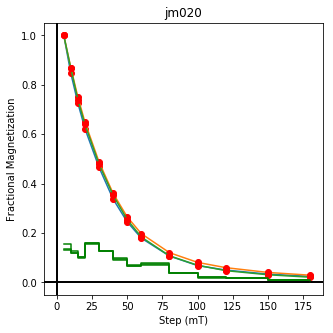
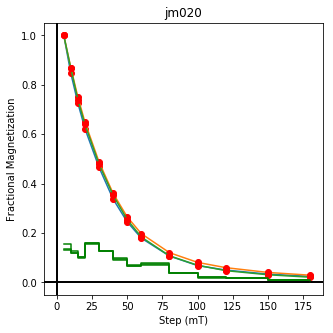

Visualizations and more analysis with PmagPy
Contents
Visualizations and more analysis with PmagPy#
This notebook demonstrates PmagPy functions that can be used to visualize data as well as those that conduct statistical tests that have associated visualizations.
Guide to PmagPy#
The notebook is one of a series of notebooks that demonstrate the functionality of PmagPy. The other notebooks are:
PmagPy_introduction.ipynb This notebook introduces PmagPy and lists the functions that are demonstrated in the other notebooks.
PmagPy_calculations.ipynb This notebook demonstrates many of the PmagPy calculation functions such as those that rotate directions, return statistical parameters, and simulate data from specified distributions
PmagPy_MagIC.ipynb This notebook demonstrates how PmagPy can be used to read and write data to and from the MagIC database format including conversion from many individual lab measurement file formats.
Customizing this notebook#
If you want to make changes to this notebook, you should make a copy (see File menu). Otherwise each time you update PmagPy, your changes will be overwritten.
Get started#
To use the functions in this notebook, we have to import the PmagPy modules pmagplotlib, pmag and ipmag and some other handy functions for use in the notebook. This is done in the following code block which must be executed before running any other code block. To execute, click on the code block and then click on the “Run” button in the menu.
In order to access the example data, this notebook is meant to be run in the PmagPy-data directory (PmagPy directory for developers).
Try it! Run the code block below (click on the cell and then click ‘Run’):
import pmagpy.pmag as pmag
import pmagpy.pmagplotlib as pmagplotlib
import pmagpy.ipmag as ipmag
import pmagpy.contribution_builder as cb
from pmagpy import convert_2_magic as convert
import matplotlib.pyplot as plt # our plotting buddy
import matplotlib
import numpy as np # the fabulous NumPy package
import pandas as pd # and of course Pandas
# test if Basemap and/or cartopy is installed
has_basemap, Basemap = pmag.import_basemap()
has_cartopy, Cartopy = pmag.import_cartopy()
# test if xlwt is installed (allows you to export to excel)
try:
import xlwt
has_xlwt = True
except ImportError:
has_xlwt = False
# This allows you to make matplotlib plots inside the notebook.
%matplotlib inline
from IPython.display import Image
import os
print('All modules imported!')
All modules imported!
Functions demonstrated within PmagPy_plots_analysis.ipynb:#
Functions in PmagPy_plots_tests.ipynb
ani_depthplot : plots anisotropy data against depth in stratigraphic section (Xmas tree plots)
aniso_magic : makes plots of anisotropy data and bootstrapped confidences
biplot_magic : plots different columns against each other in MagIC formatted data files
chi_magic : plots magnetic susceptibility data in MagIC format as function of field, frequency or temperature
common_mean : graphical approach to testing two sets of directions for common mean using bootstrap
cont_rot : makes plots of continents after rotation to specified coordinate system
core_depthplot : plots MagIC formatted data
curie : makes plots of Curie Temperature data and provides estimates for Tc
dayplot_magic : makes Day et al. (1977) and other plots with hysteresis statistics
dmag_magic : plots remanence against demagnetization step for MagIC formatted files
eqarea and eqarea_magic : makes equal area projections for directions
eqarea_ell : makes equal area projections for directions with specified confidence ellipses
find_ei : finds the inclination unflattening factor that unsquishes directions to match TK03 distribution
fishqq: makes a Quantile-Quantile plot for directions against uniform and exponential distributions
foldtest & foldtest_magic : finds tilt correction that maximizes concentration of directions, with bootstrap confidence bounds.
forc_diagram: plots FORC diagrams for both conventional and irregular FORCs
histplot : makes histograms
hysteresis_magic : makes plots of hysteresis data (not FORCs).
irm_unmix : analyzes IRM acquisition data in terms of coercivity distributions
irmaq_magic : plots IRM acquistion data
lnp_magic : plots lines and planes for site level data and calculates best fit mean and alpha_95
lowes : makes a plot of the Lowe’s spectrum for a geomagnetic field model
lowrie and lowrie_magic : makes plots of Lowrie’s (1990) 3D-IRM demagnetization experiments
plot_cdf and plot_2cdfs : makes a cumulative distribution plot of data
plot_di_mean : makes equal area plots of directions and their \(\alpha_{95}\)s
plot_geomagia : makes plots from files downloaded from the geomagia website
plot_mag_map : makes a color contour plot of geomagnetic field models
plot_magic_keys : plots data from MagIC formatted data files
plot_map_pts : plots points on maps
plot_ts : makes a plot of the desired Geomagnetic Reversal time scale
polemap_magic : reads in MagIC formatted file with paleomagnetic poles and plots them
qqplot : makes a Quantile-Quantile plot for data against a normal distribution
qqunf : makes a Quantile-Quantile plot for data against a uniform distribution
quick_hyst : makes hysteresis plots
revtest & revtest_magic : performs a bootstrap reversals test
thellier_magic : makes plots of thellier-thellier data.
vgpmap_magic : reads in MagIC formatted file with virtual geomagnetic poles and plots them
watsons_v : makes a graph for Watson’s V test for common mean
zeq and zeq_magic : makes quick zijderveld plots for measurement data
Maps:
cont_rot : makes plots of continents after rotation to specified coordinate system
plot_mag_map : makes a color contour plot of geomagnetic field models
plot_map_pts : plots points on maps
polemap_magic : reads in MagIC formatted file with paleomagnetic poles and plots them
vgpmap_magic : reads in MagIC formatted file with virtual geomagnetic poles and plots them
Figures#
The plotting functions make plots to the screen (using the
%matplotlib inlinemagic command), but all matplotlib plots can be saved with the command:
plt.savefig('PATH_TO_FILE_NAME.FMT')
and then viewed in the notebook with:
Image('PATH_TO_FILE_NAME.FMT')
ani_depthplot#
[Essentials Chapter 13] [MagIC Database] [command_line_version]
Anisotropy data can be plotted versus depth. The program ani_depthplot uses MagIC formatted data tables. Bulk susceptibility measurements can also be plotted if they are available in a measurements.txt formatted file.
In this example, we will use the data from Tauxe et al. (2015, doi:10.1016/j.epsl.2014.12.034) measured on samples obtained during Expedition 318 of the International Ocean Drilling Program. To get the entire dataset, go to the MagIC data base at: https://www2.earthref.org/MagIC/doi/10.1016/j.epsl.2014.12.034. Download the data set and unpack it with ipmag.download_magic (see the PmagPy_MagIC notebook).
We will use the ipmag.ani_depthplot() version of this program.
help(ipmag.ani_depthplot)
Help on function ani_depthplot in module pmagpy.ipmag:
ani_depthplot(spec_file='specimens.txt', samp_file='samples.txt', meas_file='measurements.txt', site_file='sites.txt', age_file='', sum_file='', fmt='svg', dmin=-1, dmax=-1, depth_scale='core_depth', dir_path='.', contribution=None)
returns matplotlib figure with anisotropy data plotted against depth
available depth scales: 'composite_depth', 'core_depth' or 'age' (you must provide an age file to use this option).
You must provide valid specimens and sites files, and either a samples or an ages file.
You may additionally provide measurements and a summary file (csv).
Parameters
----------
spec_file : str, default "specimens.txt"
samp_file : str, default "samples.txt"
meas_file : str, default "measurements.txt"
site_file : str, default "sites.txt"
age_file : str, default ""
sum_file : str, default ""
fmt : str, default "svg"
format for figures, ["svg", "jpg", "pdf", "png"]
dmin : number, default -1
minimum depth to plot (if -1, default to plotting all)
dmax : number, default -1
maximum depth to plot (if -1, default to plotting all)
depth_scale : str, default "core_depth"
scale to plot, ['composite_depth', 'core_depth', 'age'].
if 'age' is selected, you must provide an ages file.
dir_path : str, default "."
directory for input files
contribution : cb.Contribution, default None
if provided, use Contribution object instead of reading in
data from files
Returns
---------
plot : matplotlib plot, or False if no plot could be created
name : figure name, or error message if no plot could be created
And here we go:
ipmag.ani_depthplot(dir_path='data_files/ani_depthplot');
-I- Using online data model
-I- Getting method codes from earthref.org
-I- Importing controlled vocabularies from https://earthref.org
---------------------------------------------------------------------------
ValueError Traceback (most recent call last)
/var/folders/hb/m9qm0bdd13q_t59j9424w1n80000gn/T/ipykernel_74170/730097389.py in <module>
----> 1 ipmag.ani_depthplot(dir_path='data_files/ani_depthplot');
~/PmagPy/pmagpy/ipmag.py in ani_depthplot(spec_file, samp_file, meas_file, site_file, age_file, sum_file, fmt, dmin, dmax, depth_scale, dir_path, contribution)
3393 Axs.append(ax6)
3394 ax6.plot(Bulks, BulkDepths, 'bo')
-> 3395 ax6.axis([bmin - 1, 1.1 * bmax, dmax, dmin])
3396 ax6.set_xlabel('Bulk Susc. (uSI)')
3397 ax6.yaxis.set_major_locator(plt.NullLocator())
~/opt/anaconda3/envs/pmagpy_env/lib/python3.9/site-packages/matplotlib/axes/_base.py in axis(self, emit, *args, **kwargs)
1926 if ymin is None and ymax is None
1927 else False)
-> 1928 self.set_xlim(xmin, xmax, emit=emit, auto=xauto)
1929 self.set_ylim(ymin, ymax, emit=emit, auto=yauto)
1930 if kwargs:
~/opt/anaconda3/envs/pmagpy_env/lib/python3.9/site-packages/matplotlib/axes/_base.py in set_xlim(self, left, right, emit, auto, xmin, xmax)
3520
3521 self._process_unit_info([("x", (left, right))], convert=False)
-> 3522 left = self._validate_converted_limits(left, self.convert_xunits)
3523 right = self._validate_converted_limits(right, self.convert_xunits)
3524
~/opt/anaconda3/envs/pmagpy_env/lib/python3.9/site-packages/matplotlib/axes/_base.py in _validate_converted_limits(self, limit, convert)
3437 if (isinstance(converted_limit, Real)
3438 and not np.isfinite(converted_limit)):
-> 3439 raise ValueError("Axis limits cannot be NaN or Inf")
3440 return converted_limit
3441
ValueError: Axis limits cannot be NaN or Inf
aniso_magic#
[Essentials Chapter 13] [MagIC Database] [command line version]
Samples were collected from the eastern margin a dike oriented with a bedding pole declination of 110∘ and dip of 2∘. The data have been imported into a MagIC (data model 3) formatted file named dike_specimens.txt.
We will make a plot of the data using ipmag.aniso_magic(), using the site parametric bootstrap option and plot out the bootstrapped eigenvectors. We will also draw on the trace of the dike.
help(ipmag.aniso_magic)
Help on function aniso_magic in module pmagpy.ipmag:
aniso_magic(infile='specimens.txt', samp_file='samples.txt', site_file='sites.txt', verbose=True, ipar=False, ihext=True, ivec=False, isite=False, iloc=False, iboot=False, vec=0, Dir=[], PDir=[], crd='s', num_bootstraps=1000, dir_path='.', fignum=1, save_plots=True, interactive=False, fmt='png', contribution=None, image_records=False)
Makes plots of anisotropy eigenvectors, eigenvalues and confidence bounds
All directions are on the lower hemisphere.
Parameters
__________
infile : specimens formatted file with aniso_s data
samp_file : samples formatted file with sample => site relationship
site_file : sites formatted file with site => location relationship
verbose : if True, print messages to output
confidence bounds options:
ipar : if True - perform parametric bootstrap - requires non-blank aniso_s_sigma
ihext : if True - Hext ellipses
ivec : if True - plot bootstrapped eigenvectors instead of ellipses
isite : if True plot by site, requires non-blank samp_file
#iloc : if True plot by location, requires non-blank samp_file, and site_file NOT IMPLEMENTED
iboot : if True - bootstrap ellipses
vec : eigenvector for comparison with Dir
Dir : [Dec,Inc] list for comparison direction
PDir : [Pole_dec, Pole_Inc] for pole to plane for comparison
green dots are on the lower hemisphere, cyan are on the upper hemisphere
crd : ['s','g','t'], coordinate system for plotting whereby:
s : specimen coordinates, aniso_tile_correction = -1, or unspecified
g : geographic coordinates, aniso_tile_correction = 0
t : tilt corrected coordinates, aniso_tile_correction = 100
num_bootstraps : how many bootstraps to do, default 1000
dir_path : directory path
fignum : matplotlib figure number, default 1
save_plots : bool, default True
if True, create and save all requested plots
interactive : bool, default False
interactively plot and display for each specimen
(this is best used on the command line only)
fmt : str, default "svg"
format for figures, [svg, jpg, pdf, png]
contribution : pmagpy contribution_builder.Contribution object, if not provided will be created
in directory (default None). (if provided, infile/samp_file/dir_path may be left blank)
ipmag.aniso_magic(infile='dike_specimens.txt',dir_path='data_files/aniso_magic',
iboot=1,ihext=0,ivec=1,PDir=[120,10],ipar=1, save_plots=False) # compare dike directions with plane of dike with pole of 120,10
desired coordinate system not available, using available: g
(True, [])
The specimen eigenvectors are plotted in the top diagram with the usual convention that squares are the V\(_1\) directions, triangles are the V\(_2\) directions and circles are the V\(_3\) directions. All directions are plotted on the lower hemisphere. The bootstrapped eigenvectors are shown in the middle diagram. Cumulative distributions of the bootstrapped eigenvalues are shown in the bottom plot with the 95% confidence bounds plotted as vertical lines. It appears that the magma was moving in the northern and slightly up direction along the dike.
There are more options to ipmag.aniso_magic_nb() that come in handy. In particular, one often wishes to test if a particular fabric is isotropic (the three eigenvalues cannot be distinguished), or if a particular eigenvector is parallel to some direction. For example, undisturbed sedimentary fabrics are oblate (the maximum and intermediate directions cannot be distinguished from one another, but are distinct from the minimum) and the eigenvector associated with the minimum eigenvalue is vertical. These criteria can be tested using the distributions of bootstrapped eigenvalues and eigenvectors.
The following session illustrates how this is done, using the data in the test file sed_specimens.txt in the aniso_magic directory.
ipmag.aniso_magic(infile='sed_specimens.txt',dir_path='data_files/aniso_magic',
iboot=1,ihext=0,ivec=1,Dir=[0,90],vec=3,ipar=1, save_plots=False) # parametric bootstrap and compare V3 with vertical
desired coordinate system not available, using available: g
(True, [])

The top three plots are as in the dike example before, showing a clear triaxial fabric (all three eigenvalues and associated eigenvectors are distinct from one another. In the lower three plots we have the distributions of the three components of the chosen axis, V\(_3\), their 95% confidence bounds (dash lines) and the components of the designated direction (solid line). This direction is also shown in the equal area projection above as a red pentagon. The minimum eigenvector is not vertical in this case.
biplot_magic#
[Essentials Chapter 8] [MagIC Database] [command line version]
It is often useful to plot measurements from one experiement against another. For example, rock magnetic studies of sediments often plot the IRM against the ARM or magnetic susceptibility. All of these types of measurements can be imported into a single measurements formatted file and use the MagIC method codes and other clues (lab fields, etc.) to differentiate one measurement from another.
Data were obtained by Hartl and Tauxe (1997, doi: 10.1111/j.1365-246X.1997.tb04082.x) from a Paleogene core from 28\(^{\circ}\) S (DSDP Site 522) and used for a relative paleointensity study. IRM, ARM, magnetic susceptibility and remanence data were uploaded to the MagIC database. The MagIC measurements formatted file for this study (which you can get from https://earthref.org/MagIC/doi/10.1111/j.1365-246X.1997.tb04082.x and unpack with download_magic is saved in data_files/biplot_magic/measurements.txt.
We can create these plots using Pandas. The key to what the measurements mean is in the Magic method codes, so we can first get a unique list of all the available method_codes, then plot the ones we are interested in against each other. Let’s read in the data file in to a Pandas DataFrame and exctract the method codes to see what we have:
# read in the data
meas_df=pd.read_csv('data_files/biplot_magic/measurements.txt',sep='\t',header=1)
# get the method_codes and print
print(meas_df.method_codes.unique())
# take a look at the top part of the measurements data frame
meas_df.head()
['LT-AF-Z' 'LT-AF-I' 'LT-IRM' 'LP-X']
| citations | dir_dec | dir_inc | experiment | magn_mass | meas_temp | measurement | method_codes | quality | specimen | standard | susc_chi_mass | treat_ac_field | treat_dc_field | treat_step_num | treat_temp | |
|---|---|---|---|---|---|---|---|---|---|---|---|---|---|---|---|---|
| 0 | This study | 268.5 | -41.2 | 15-1-013:LP-AF-DIR | 0.000003 | 300 | 15-1-013:LP-AF-DIR-1 | LT-AF-Z | g | 15-1-013 | u | NaN | 0.015 | 0.00000 | 1.0 | 300 |
| 1 | This study | NaN | NaN | 15-1-013:LP-ARM | 0.000179 | 300 | 15-1-013:LP-ARM-2 | LT-AF-I | g | 15-1-013 | u | NaN | 0.080 | 0.00005 | 2.0 | 300 |
| 2 | This study | NaN | NaN | 15-1-013:LP-IRM | 0.003600 | 300 | 15-1-013:LP-IRM-3 | LT-IRM | g | 15-1-013 | u | NaN | 0.000 | 1.00000 | 3.0 | 300 |
| 3 | This study | NaN | NaN | 15-1-013:LP-X | NaN | 300 | 15-1-013:LP-X-4 | LP-X | NaN | 15-1-013 | NaN | 2.380000e-07 | 0.010 | 0.00000 | 4.0 | 300 |
| 4 | This study | 181.0 | 68.6 | 15-1-022:LP-AF-DIR | 0.000011 | 300 | 15-1-022:LP-AF-DIR-5 | LT-AF-Z | g | 15-1-022 | u | NaN | 0.015 | 0.00000 | 5.0 | 300 |
These are: an AF demag step (LT-AF-Z), an ARM (LT-AF-I), an IRM (LT-IRM) and a susceptibility (LP-X). Now we can fish out data for each method, merge them by specimen, dropping any missing measurements and finally plot one against the other.
# get the IRM data
IRM=meas_df[meas_df.method_codes.str.contains('LT-IRM')]
IRM=IRM[['specimen','magn_mass']] #trim the data frame
IRM.columns=['specimen','IRM'] # rename the column
# do the same for the ARM data
ARM=meas_df[meas_df.method_codes.str.contains('LT-AF-I')]
ARM=ARM[['specimen','magn_mass']]
ARM.columns=['specimen','ARM']
# and the magnetic susceptibility
CHI=meas_df[meas_df.method_codes.str.contains('LP-X')]
CHI=CHI[['specimen','susc_chi_mass']]
CHI.columns=['specimen','CHI']
# merge IRM ARM data by specimen
RMRMs=pd.merge(IRM,ARM,on='specimen')
# add on the susceptility data
RMRMs=pd.merge(RMRMs,CHI,on='specimen')
Now we are ready to make the plots.
fig=plt.figure(1, (12,4)) # make a figure
fig.add_subplot(131) # make the first in a row of three subplots
plt.plot(RMRMs.IRM,RMRMs.ARM,'ro',markeredgecolor='black')
plt.xlabel('IRM (Am$^2$/kg)') # label the X axis
plt.ylabel('ARM (Am$^2$/kg)') # and the Y axis
fig.add_subplot(132)# make the second in a row of three subplots
plt.plot(RMRMs.IRM,RMRMs.CHI,'ro',markeredgecolor='black')
plt.xlabel('IRM (Am$^2$/kg)')
plt.ylabel('$\chi$ (m$^3$/kg)')
fig.add_subplot(133)# and the third in a row of three subplots
plt.plot(RMRMs.ARM,RMRMs.CHI,'ro',markeredgecolor='black')
plt.xlabel('$\chi$ (m$^3$/kg)')
plt.ylabel('IRM (Am$^2$/kg)');
chi_magic#
[Essentials Chapter 8] [MagIC Database] [command line version]
It is sometimes useful to measure susceptibility as a function of temperature, applied field and frequency. Here we use a data set that came from the Tiva Canyon Tuff sequence (see Jackson et al., 2006, doi: 10.1029/2006JB004514).
chi_magic reads in a MagIC formatted file and makes various plots. We do this using Pandas.
# with ipmag
ipmag.chi_magic('data_files/chi_magic/measurements.txt', save_plots=False)
Not enough data to plot IRM-Kappa-2352
(True, [])
# read in data from data model 3 example file using pandas
chi_data=pd.read_csv('data_files/chi_magic/measurements.txt',sep='\t',header=1)
print (chi_data.columns)
# get arrays of available temps, frequencies and fields
Ts=np.sort(chi_data.meas_temp.unique())
Fs=np.sort(chi_data.meas_freq.unique())
Bs=np.sort(chi_data.meas_field_ac.unique())
Index(['experiment', 'specimen', 'measurement', 'treat_step_num', 'citations',
'instrument_codes', 'method_codes', 'meas_field_ac', 'meas_freq',
'meas_temp', 'timestamp', 'susc_chi_qdr_volume', 'susc_chi_volume'],
dtype='object')
# plot chi versus temperature at constant field
b=Bs.max()
for f in Fs:
this_f=chi_data[chi_data.meas_freq==f]
this_f=this_f[this_f.meas_field_ac==b]
plt.plot(this_f.meas_temp,1e6*this_f.susc_chi_volume,label='%i'%(f)+' Hz')
plt.legend()
plt.xlabel('Temperature (K)')
plt.ylabel('$\chi$ ($\mu$SI)')
plt.title('B = '+'%7.2e'%(b)+ ' T')
Text(0.5,1,'B = 3.00e-04 T')

# plot chi versus frequency at constant B
b=Bs.max()
t=Ts.min()
this_t=chi_data[chi_data.meas_temp==t]
this_t=this_t[this_t.meas_field_ac==b]
plt.semilogx(this_t.meas_freq,1e6*this_t.susc_chi_volume,label='%i'%(t)+' K')
plt.legend()
plt.xlabel('Frequency (Hz)')
plt.ylabel('$\chi$ ($\mu$SI)')
plt.title('B = '+'%7.2e'%(b)+ ' T')
Text(0.5,1,'B = 3.00e-04 T')
You can see the dependence on temperature, frequency and applied field. These data support the suggestion that there is a strong superparamagnetic component in these specimens.
common_mean#
[Essentials Chapter 12] [command line version]
Most paleomagnetists use some form of Fisher Statistics to decide if two directions are statistically distinct or not (see Essentials Chapter 11 for a discussion of those techniques). But often directional data are not Fisher distributed and the parametric approach will give misleading answers. In these cases, one can use a boostrap approach, described in detail in [Essentials Chapter 12]. The program common_mean can be used for a bootstrap test for common mean to check whether two declination, inclination data sets have a common mean at the 95% level of confidence.
We want to compare the two data sets: common_mean_ex_file1.dat and common_mean_ex_file2.dat. But first, let’s look at the data in equal area projection using the methods outline in the section on eqarea.
directions_A=np.loadtxt('data_files/common_mean/common_mean_ex_file1.dat')
directions_B=np.loadtxt('data_files/common_mean/common_mean_ex_file2.dat')
ipmag.plot_net(1)
ipmag.plot_di(di_block=directions_A,color='red')
ipmag.plot_di(di_block=directions_B,color='blue')
Now let’s look at the common mean problem using ipmag.common_mean_bootstrap().
help(ipmag.common_mean_bootstrap)
Help on function common_mean_bootstrap in module pmagpy.ipmag:
common_mean_bootstrap(Data1, Data2, NumSims=1000, save=False, save_folder='.', fmt='svg', figsize=(7, 2.3), x_tick_bins=4)
Conduct a bootstrap test (Tauxe, 2010) for a common mean on two declination,
inclination data sets. Plots are generated of the cumulative distributions
of the Cartesian coordinates of the means of the pseudo-samples (one for x,
one for y and one for z). If the 95 percent confidence bounds for each
component overlap, the two directions are not significantly different.
Parameters
----------
Data1 : a nested list of directional data [dec,inc] (a di_block)
Data2 : a nested list of directional data [dec,inc] (a di_block)
if Data2 is length of 1, treat as single direction
NumSims : number of bootstrap samples (default is 1000)
save : optional save of plots (default is False)
save_folder : path to directory where plots should be saved
fmt : format of figures to be saved (default is 'svg')
figsize : optionally adjust figure size (default is (7, 2.3))
x_tick_bins : because they occasionally overlap depending on the data, this
argument allows you adjust number of tick marks on the x axis of graphs
(default is 4)
Returns
-------
three plots : cumulative distributions of the X, Y, Z of bootstrapped means
Examples
--------
Develop two populations of directions using ``ipmag.fishrot``. Use the
function to determine if they share a common mean (through visual inspection
of resulting plots).
>>> directions_A = ipmag.fishrot(k=20, n=30, dec=40, inc=60)
>>> directions_B = ipmag.fishrot(k=35, n=25, dec=42, inc=57)
>>> ipmag.common_mean_bootstrap(directions_A, directions_B)
ipmag.common_mean_bootstrap(directions_A,directions_B,figsize=(9,3))
These plots suggest that the two data sets share a common mean.
Now compare the data in common_mean_ex_file1.dat with the expected direction at the 5\(^{\circ}\) N latitude that these data were collected (Dec=0, Inc=9.9).
To do this, we set the second data set to be the desired direction for comparison.
comp_dir=[0,9.9]
ipmag.common_mean_bootstrap(directions_A,comp_dir,figsize=(9,3))
Apparently the data (cumulative distribution functions) are entirely consistent with the expected direction (dashed lines are the cartesian coordinates of that).
cont_rot#
[Essentials Chapter 16] [command line version]
We can make an orthographic projection with latitude = -20\(^{\circ}\) and longitude = 0\(^{\circ}\) at the center of the African and South American continents reconstructed to 180 Ma using the Torsvik et al. (2008, doi: 10.1029/2007RG000227) poles of finite rotation. We would do this by first holding Africa fixed.
We need to read in in the outlines of continents from continents.get_cont(), rotate them around a rotation pole and angle as specified by the age and continent in question (from frp.get_pole() using pmag.pt_rot(). Then we can plot them using pmagplotlib.plot_map(). If the Basemap version is preferred, use pmagplotlib.plot_map_basemap(). Here we demonstrate this from within the notebook by just calling the PmagPy functions.
# load in the continents module
import pmagpy.continents as continents
import pmagpy.frp as frp
help(continents.get_continent)
Help on function get_continent in module pmagpy.continents:
get_continent(continent)
get_continent(continent)
returns the outlines of specified continent.
Parameters:
____________________
continent:
af : Africa
congo : Congo
kala : Kalahari
aus : Australia
balt : Baltica
eur : Eurasia
ind : India
sam : South America
ant : Antarctica
grn : Greenland
lau : Laurentia
nam : North America
gond : Gondawanaland
Returns :
array of [lat/long] points defining continent
help(pmagplotlib.plot_map)
Help on function plot_map in module pmagpy.pmagplotlib:
plot_map(fignum, lats, lons, Opts)
makes a cartopy map with lats/lons
Requires installation of cartopy
Parameters:
_______________
fignum : matplotlib figure number
lats : array or list of latitudes
lons : array or list of longitudes
Opts : dictionary of plotting options:
Opts.keys=
proj : projection [supported cartopy projections:
pc = Plate Carree
aea = Albers Equal Area
aeqd = Azimuthal Equidistant
lcc = Lambert Conformal
lcyl = Lambert Cylindrical
merc = Mercator
mill = Miller Cylindrical
moll = Mollweide [default]
ortho = Orthographic
robin = Robinson
sinu = Sinusoidal
stere = Stereographic
tmerc = Transverse Mercator
utm = UTM [set zone and south keys in Opts]
laea = Lambert Azimuthal Equal Area
geos = Geostationary
npstere = North-Polar Stereographic
spstere = South-Polar Stereographic
latmin : minimum latitude for plot
latmax : maximum latitude for plot
lonmin : minimum longitude for plot
lonmax : maximum longitude
lat_0 : central latitude
lon_0 : central longitude
sym : matplotlib symbol
symsize : symbol size in pts
edge : markeredgecolor
cmap : matplotlib color map
res : resolution [c,l,i,h] for low/crude, intermediate, high
boundinglat : bounding latitude
sym : matplotlib symbol for plotting
symsize : matplotlib symbol size for plotting
names : list of names for lats/lons (if empty, none will be plotted)
pltgrd : if True, put on grid lines
padlat : padding of latitudes
padlon : padding of longitudes
gridspace : grid line spacing
global : global projection [default is True]
oceancolor : 'azure'
landcolor : 'bisque' [choose any of the valid color names for matplotlib
see https://matplotlib.org/examples/color/named_colors.html
details : dictionary with keys:
coasts : if True, plot coastlines
rivers : if True, plot rivers
states : if True, plot states
countries : if True, plot countries
ocean : if True, plot ocean
fancy : if True, plot etopo 20 grid
NB: etopo must be installed
if Opts keys not set :these are the defaults:
Opts={'latmin':-90,'latmax':90,'lonmin':0,'lonmax':360,'lat_0':0,'lon_0':0,'proj':'moll','sym':'ro,'symsize':5,'edge':'black','pltgrid':1,'res':'c','boundinglat':0.,'padlon':0,'padlat':0,'gridspace':30,'details':all False,'edge':None,'cmap':'jet','fancy':0,'zone':'','south':False,'oceancolor':'azure','landcolor':'bisque'}
# retrieve continental outline
# This is the version that uses cartopy and requires installation of cartopy
af=continents.get_continent('af').transpose()
sam=continents.get_continent('sam').transpose()
#define options for pmagplotlib.plot_map
plt.figure(1,(5,5))
Opts = {'latmin': -90, 'latmax': 90, 'lonmin': 0., 'lonmax': 360., 'lat_0': -20, \
'lon_0': 345,'proj': 'ortho', 'sym': 'r-', 'symsize': 3,\
'pltgrid': 0, 'res': 'c', 'boundinglat': 0.}
if has_cartopy:
pmagplotlib.plot_map(1,af[0],af[1],Opts)
Opts['sym']='b-'
pmagplotlib.plot_map(1,sam[0],sam[1],Opts)
elif has_basemap:
pmagplotlib.plot_map_basemap(1,af[0],af[1],Opts)
Opts['sym']='b-'
pmagplotlib.plot_map_basemap(1,sam[0],sam[1],Opts)
Now for the rotation part. These are in a function called frp.get_pole()
help(frp.get_pole)
Help on function get_pole in module pmagpy.frp:
get_pole(continent, age)
returns rotation poles and angles for specified continents and ages
assumes fixed Africa.
Parameters
__________
continent :
aus : Australia
eur : Eurasia
mad : Madacascar
[nwaf,congo] : NW Africa [choose one]
col : Colombia
grn : Greenland
nam : North America
par : Paraguay
eant : East Antarctica
ind : India
[neaf,kala] : NE Africa [choose one]
[sac,sam] : South America [choose one]
ib : Iberia
saf : South Africa
Returns
_______
[pole longitude, pole latitude, rotation angle] : for the continent at specified age
# get the rotation pole for south america relative to South Africa at 180 Ma
sam_pole=frp.get_pole('sam',180)
# NB: for african rotations, first rotate other continents to fixed Africa, then
# rotate with South African pole (saf)
The rotation is done by pmag.pt_rot().
help(pmag.pt_rot)
Help on function pt_rot in module pmagpy.pmag:
pt_rot(EP, Lats, Lons)
Rotates points on a globe by an Euler pole rotation using method of
Cox and Hart 1986, box 7-3.
Parameters
----------
EP : Euler pole list [lat,lon,angle]
Lats : list of latitudes of points to be rotated
Lons : list of longitudes of points to be rotated
Returns
_________
RLats : rotated latitudes
RLons : rotated longitudes
so here we go…
plt.figure(1,(5,5))
sam_rot=pmag.pt_rot(sam_pole,sam[0],sam[1]) # same for south america
# and plot 'em
Opts['sym']='r-'
if has_cartopy:
pmagplotlib.plot_map(1,af[0],af[1],Opts)
Opts['sym']='b-'
pmagplotlib.plot_map(1,sam_rot[0],sam_rot[1],Opts)
elif has_basemap:
pmagplotlib.plot_map_basemap(1,af[0],af[1],Opts)
Opts['sym']='b-'
pmagplotlib.plot_map_basemap(1,sam_rot[0],sam_rot[1],Opts)
core_depthplot#
[Essentials Chapter 15] [command line version]
The program core_depthplot can be used to plot various measurement data versus sample depth. The data must be in the MagIC data format. The program will plot whole core data, discrete sample at a bulk demagnetization step, data from vector demagnetization experiments, and so on.
We can try this out on some data from DSDP Hole 522, (drilled at 26S/5W) and measured by Tauxe and Hartl (1997, doi: 10.1111/j.1365-246X.1997.tb04082.x). These were downloaded and unpacked in the biplot_magic example. More of the data are in the directory ../data_files/core_depthplot.
In this example, we will plot the alternating field (AF) data after the 15 mT step. The magnetizations will be plotted on a log scale and, as this is a record of the Oligocene, we will plot the Oligocene time scale, using the calibration of Gradstein et al. (2012), commonly referred to as “GTS12” for the the Oligocene. We are only interested in the data between 50 and 150 meters and we are not interested in the declinations here.
All this can be done using the wonders of Pandas data frames using the data in the data_files/core_depthplot directory.
Let’s do things this way:
read in the data from the sites and specimens files.
Drop the records with NaN for analysts, keeping one of the three lines available for each specimen.
Make a new column named site in the specdimens table that is the same as the specimen column.
(this makes sense because these are core data, so the specimen=sample=site. )
Merge the two DataFrames on the site column.
filter the data for depths between 50 and 150.
Plot dir_inc versus core_depth.
Put on GAD field inclination
plot the time scale
specimens=pd.read_csv('data_files/core_depthplot/specimens.txt',sep='\t',header=1)
sites=pd.read_csv('data_files/core_depthplot/sites.txt',sep='\t',header=1)
specimens=specimens.dropna(subset=['dir_inc']) # kill unwanted lines with duplicate or irrelevent info
specimens['site']=specimens['specimen'] # make a column with site name
data=pd.merge(specimens,sites,on='site') # merge the two data frames on site
data=data[data.core_depth>50] # all levels > 50
data=data[data.core_depth<150] # and < 150
lat=26 # we need this for the GAD INC
Plot versus core_depth
fig=plt.figure(1,(6,12)) # make the figure
ax=fig.add_subplot(121) # make the first of 2 subplots
plt.ylabel('Depth (m)') # label the Y axis
plt.plot(data.dir_inc,data.core_depth,'k-') # draw on a black line through the data
# draw the data points as cyan dots with black edges
plt.plot(data.dir_inc,data.core_depth,'co',markeredgecolor='black')
plt.title('Inclinations') # put on a title
plt.axvline(0,color='black')# make a central line at inc=0
plt.ylim(150,50) # set the plot Y limits to the desired depths
fig.add_subplot(122) # make the second of two subplots
# plot intensity data on semi-log plot
plt.semilogx(data.int_rel/data.int_rel.mean(),data.core_depth,'k-')
plt.semilogx(data.int_rel/data.int_rel.mean(),\
data.core_depth,'co',markeredgecolor='black')
plt.ylim(150,50)
plt.title('Relative Intensity');

And now versus age:
fig=plt.figure(1,(9,12)) # make the figure
ax=fig.add_subplot(131) # make the first of three subplots
pmagplotlib.plot_ts(ax,23,34,timescale='gts12') # plot on the time scale
fig.add_subplot(132) # make the second of three subplots
plt.plot(data.dir_inc,data.core_depth,'k-')
plt.plot(data.dir_inc,data.core_depth,'co',markeredgecolor='black')
plt.ylim(35,23)
# calculate the geocentric axial dipole field for the site latitude
gad=np.degrees(np.arctan(2.*np.tan(np.radians(lat)))) # tan (I) = 2 tan (lat)
# put it on the plot as a green dashed line
plt.axvline(gad,color='green',linestyle='dashed',linewidth=2)
plt.axvline(-gad,color='green',linestyle='dashed',linewidth=2)
plt.title('Inclinations')
plt.ylim(150,50)
fig.add_subplot(133) # make the third of three plots
# plot the intensity data on semi-log plot
plt.semilogx(data.int_rel/data.int_rel.mean(),data.core_depth,'k-')
plt.semilogx(data.int_rel/data.int_rel.mean(),data.core_depth,'co',markeredgecolor='black')
plt.ylim(150,50)
plt.title('Relative Intensity');
curie#
[Essentials Chapter 6] [command line version]
Curie Temperature experiments, saved in MagIC formatted files, can be plotted using ipmag.curie().
help(ipmag.curie)
Help on function curie in module pmagpy.ipmag:
curie(path_to_file='.', file_name='', magic=False, window_length=3, save=False, save_folder='.', fmt='svg', t_begin='', t_end='')
Plots and interprets curie temperature data.
***
The 1st derivative is calculated from smoothed M-T curve (convolution
with trianfular window with width= <-w> degrees)
***
The 2nd derivative is calculated from smoothed 1st derivative curve
(using the same sliding window width)
***
The estimated curie temp. is the maximum of the 2nd derivative.
Temperature steps should be in multiples of 1.0 degrees.
Parameters
__________
file_name : name of file to be opened
Optional Parameters (defaults are used if not specified)
----------
path_to_file : path to directory that contains file (default is current directory, '.')
window_length : dimension of smoothing window (input to smooth() function)
save : boolean argument to save plots (default is False)
save_folder : relative directory where plots will be saved (default is current directory, '.')
fmt : format of saved figures
t_begin: start of truncated window for search
t_end: end of truncated window for search
magic : True if MagIC formated measurements.txt file
ipmag.curie(path_to_file='data_files/curie',file_name='curie_example.dat',\
window_length=10)
second derivative maximum is at T=552
dayplot_magic#
[Essentials Chapter 5] [command line version]
The program dayplot_magic makes Day (Day et al., 1977), or Squareness-Coercivity and Squareness-Coercivity of Remanence plots (e.g., Tauxe et al., 2002) from the MagIC formatted data. To do this, we will call ipmag.dayplot_magic().
help(ipmag.dayplot_magic)
Help on function dayplot_magic in module pmagpy.ipmag:
dayplot_magic(path_to_file='.', hyst_file='specimens.txt', rem_file='', save=True, save_folder='.', fmt='svg', data_model=3, interactive=False, contribution=None, image_records=False)
Makes 'day plots' (Day et al. 1977) and squareness/coercivity plots
(Neel, 1955; plots after Tauxe et al., 2002); plots 'linear mixing'
curve from Dunlop and Carter-Stiglitz (2006).
Optional Parameters (defaults are used if not specified)
----------
path_to_file : path to directory that contains files (default is current directory, '.')
the default input file is 'specimens.txt' (data_model=3
if data_model = 2, then must these are the defaults:
hyst_file : hysteresis file (default is 'rmag_hysteresis.txt')
rem_file : remanence file (default is 'rmag_remanence.txt')
save : boolean argument to save plots (default is True)
save_folder : relative directory where plots will be saved (default is current directory, '.')
fmt : format of saved figures (default is 'pdf')
image_records : generate and return a record for each image in a list of dicts
which can be ingested by pmag.magic_write
bool, default False
ipmag.dayplot_magic(path_to_file='data_files/dayplot_magic',hyst_file='specimens.txt',save=False)
(True, [])
dmag_magic#
[Essentials Chapter 9] [MagIC Database] [command line version]
We use dmag_magic to plot out the decay of all alternating field demagnetization experiments in MagIC formatted files. Here we can take a look at some of the data from from Cromwell et al. (2013, doi: 10.1002/ggge.20174).
This program calls pmagplotlib.plot_mag() to plot the demagnetization curve for a sample, site, or entire data file interactively. There is a version that will prepare dataframes for plotting with this function called ipmag.plot_dmag(). So let’s try that:
help(ipmag.plot_dmag)
Help on function plot_dmag in module pmagpy.ipmag:
plot_dmag(data='', title='', fignum=1, norm=1, dmag_key='treat_ac_field', intensity='', quality=False)
plots demagenetization data versus step for all specimens in pandas dataframe datablock
Parameters
______________
data : Pandas dataframe with MagIC data model 3 columns:
fignum : figure number
specimen : specimen name
dmag_key : one of these: ['treat_temp','treat_ac_field','treat_mw_energy']
selected using method_codes : ['LT_T-Z','LT-AF-Z','LT-M-Z'] respectively
intensity : if blank will choose one of these: ['magn_moment', 'magn_volume', 'magn_mass']
quality : if True use the quality column of the DataFrame
title : title for plot
norm : if True, normalize data to first step
Output :
matptlotlib plot
Read in data from a MagIC data model 3 file. Let’s go ahead and read it in with the full data hierarchy.
status,data=cb.add_sites_to_meas_table('data_files/dmag_magic')
data.head()
| analysts | citations | description | dir_csd | dir_dec | dir_inc | experiment | magn_moment | meas_n_orient | meas_temp | ... | standard | timestamp | treat_ac_field | treat_dc_field | treat_dc_field_phi | treat_dc_field_theta | treat_temp | sequence | sample | site | |
|---|---|---|---|---|---|---|---|---|---|---|---|---|---|---|---|---|---|---|---|---|---|
| measurement name | |||||||||||||||||||||
| 1 | Cromwell | This study | None | 0.3 | 190.4 | 43.5 | jm002a1:LT-NO | 5.76e-05 | 4 | 273 | ... | u | 2009-10-05T22:51:00Z | 0 | 0 | 0 | 90 | 273 | 1 | jm002a | jm002 |
| 1 | Cromwell | This study | None | 0.2 | 193.2 | 44.5 | jm002a2:LT-NO | 6.51e-05 | 4 | 273 | ... | u | 2009-10-05T22:51:00Z | 0 | 0 | 0 | 90 | 273 | 2 | jm002a | jm002 |
| 1 | Cromwell | This study | None | 0.2 | 147.5 | 50.6 | jm002b1:LT-NO | 4.97e-05 | 4 | 273 | ... | u | 2009-10-05T22:48:00Z | 0 | 0 | 0 | 90 | 273 | 3 | jm002b | jm002 |
| 1 | Cromwell | This study | None | 0.2 | 152.5 | 55.8 | jm002b2:LT-NO | 5.23e-05 | 4 | 273 | ... | u | 2009-10-05T23:07:00Z | 0 | 0 | 0 | 90 | 273 | 4 | jm002b | jm002 |
| 1 | Cromwell | This study | None | 0.2 | 186.2 | 55.7 | jm002c1:LT-NO | 5.98e-05 | 4 | 273 | ... | u | 2009-10-05T22:54:00Z | 0 | 0 | 0 | 90 | 273 | 5 | jm002c | jm002 |
5 rows × 25 columns
There are several forms of intensity measurements with different normalizations.
We could hunt through the magn_* columns to see what is non-blank or we can use the tool contribution_builder.get_intensity_col() which returns the first non-zero column.
magn_col=cb.get_intensity_col(data)
print (magn_col)
magn_moment
Let’s look at what demagnetization data are available to us:
data.method_codes.unique()
array(['LT-NO', 'LT-AF-Z:LP-DIR-AF', 'LT-AF-Z:DE-VM:LP-DIR-AF',
'LT-NO:LP-PI-TRM:LP-PI-ALT-PTRM:LP-PI-BT-MD:LP-PI-BT-IZZI',
'LT-T-Z:LP-PI-TRM-ZI:LP-PI-TRM:LP-PI-ALT-PTRM:LP-PI-BT-MD:LP-PI-BT-IZZI',
'LT-T-I:LP-PI-TRM-ZI:LP-PI-TRM:LP-PI-ALT-PTRM:LP-PI-BT-MD:LP-PI-BT-IZZI',
'LT-PTRM-MD:LP-PI-TRM:LP-PI-ALT-PTRM:LP-PI-BT-MD:LP-PI-BT-IZZI',
'LT-T-I:LP-PI-TRM-IZ:LP-PI-TRM:LP-PI-ALT-PTRM:LP-PI-BT-MD:LP-PI-BT-IZZI',
'LT-T-Z:LP-PI-TRM-IZ:LP-PI-TRM:LP-PI-ALT-PTRM:LP-PI-BT-MD:LP-PI-BT-IZZI',
'LT-PTRM-I:LP-PI-TRM:LP-PI-ALT-PTRM:LP-PI-BT-MD:LP-PI-BT-IZZI',
'LT-T-I:DE-VM:LP-PI-TRM-IZ:LP-PI-TRM:LP-PI-ALT-PTRM:LP-PI-BT-MD:LP-PI-BT-IZZI',
'LT-T-I:DE-VM:LP-PI-TRM-ZI:LP-PI-TRM:LP-PI-ALT-PTRM:LP-PI-BT-MD:LP-PI-BT-IZZI',
'LT-T-Z:DE-VM:LP-PI-TRM-IZ:LP-PI-TRM:LP-PI-ALT-PTRM:LP-PI-BT-MD:LP-PI-BT-IZZI',
'LT-AF-Z:LP-AN-ARM', 'LT-AF-I:LP-AN-ARM', 'LT-T-Z:LP-DIR-T',
'LT-T-Z:DE-VM:LP-DIR-T',
'LT-T-Z:DE-VM:LP-PI-TRM-ZI:LP-PI-TRM:LP-PI-ALT-PTRM:LP-PI-BT-MD:LP-PI-BT-IZZI',
None], dtype=object)
Oops - at least one of our records has blank method_codes! so, let’s get rid of that one.
data=data.dropna(subset=['method_codes'])
We can make the plots in this way:
select the AF demagnetization data with method_codes = ‘LP-DIR-AF’
make a dataframe with these columns: ‘specimen’,’treat_ac_field’,magn_col,and ‘quality’
call ipmag.plot_dmag() to view the plot:
af_df=data[data.method_codes.str.contains('LP-DIR-AF')] # select the thermal demag data
af_df=af_df.dropna(subset=['treat_ac_field'])
df=af_df[['specimen','treat_ac_field',magn_col,'quality']]
df.head()
| specimen | treat_ac_field | magn_moment | quality | |
|---|---|---|---|---|
| measurement name | ||||
| 1 | jm002a1 | 0.005 | 4.55e-05 | g |
| 2 | jm002a1 | 0.01 | 2.08e-05 | g |
| 3 | jm002a1 | 0.015 | 1.47e-05 | g |
| 4 | jm002a1 | 0.02 | 1.15e-05 | g |
| 5 | jm002a1 | 0.03 | 8e-06 | g |
ipmag.plot_dmag(data=df,title="AF demag",fignum=1)
This plotted all the data in the file. we could also plot the data by site by getting a unique list of site names and then walk through them one by one
sites=af_df.site.unique()
cnt=1
for site in sites:
site_df=af_df[af_df.site==site] # fish out this site
# trim to only AF data.
site_df=site_df[['specimen','treat_ac_field',magn_col,'quality']]
ipmag.plot_dmag(data=site_df,title=site,fignum=cnt)
cnt+=1

 


We could repeat for thermal data if we felt like it using ‘LT-T-Z’ as the method_code key and treat_temp as the step. We could also save the plots using plt.savefig(‘FIGNAME.FMT’) where FIGNAME could be the site, location, demag type as you wish.
# alternatively, using ipmag.dmag_magic
ipmag.dmag_magic(dir_path='data_files/dmag_magic', LT="AF", save_plots=False)
5001 records read from measurements.txt
Jan Mayen plotting by: location
(True, [])
<Figure size 432x288 with 0 Axes>
ipmag.dmag_magic(dir_path=".", input_dir_path="data_files/dmag_magic",
LT="AF", plot_by='sit', fmt="png", save_plots=False)
5001 records read from measurements.txt
jm002 plotting by: site
jm003 plotting by: site
jm004 plotting by: site
jm006 plotting by: site
jm007 plotting by: site
(True, [])
<Figure size 432x288 with 0 Axes>
dmag_magic with a downloaded file#
Now let’s look at a downloaded contribution using dmag_magic as before, but this time with thermal demagnetization.
ipmag.download_magic("magic_contribution_16533.txt", dir_path="data_files/download_magic",
input_dir_path="data_files/download_magic")
status,data=cb.add_sites_to_meas_table('data_files/download_magic')
df=data[data.method_codes.str.contains('LT-T-Z')] # select the thermal demag data
df=df[['specimen','treat_temp','magn_moment','quality']]
df=df.dropna(subset=['treat_temp','magn_moment'])
ipmag.plot_dmag(data=df,title="Thermal demag",fignum=1, dmag_key='treat_temp')
working on: 'contribution'
1 records written to file /Users/nebula/Python/PmagPy/data_files/download_magic/contribution.txt
contribution data put in /Users/nebula/Python/PmagPy/data_files/download_magic/contribution.txt
working on: 'locations'
3 records written to file /Users/nebula/Python/PmagPy/data_files/download_magic/locations.txt
locations data put in /Users/nebula/Python/PmagPy/data_files/download_magic/locations.txt
working on: 'sites'
52 records written to file /Users/nebula/Python/PmagPy/data_files/download_magic/sites.txt
sites data put in /Users/nebula/Python/PmagPy/data_files/download_magic/sites.txt
working on: 'samples'
271 records written to file /Users/nebula/Python/PmagPy/data_files/download_magic/samples.txt
samples data put in /Users/nebula/Python/PmagPy/data_files/download_magic/samples.txt
working on: 'specimens'
225 records written to file /Users/nebula/Python/PmagPy/data_files/download_magic/specimens.txt
specimens data put in /Users/nebula/Python/PmagPy/data_files/download_magic/specimens.txt
working on: 'measurements'
3072 records written to file /Users/nebula/Python/PmagPy/data_files/download_magic/measurements.txt
measurements data put in /Users/nebula/Python/PmagPy/data_files/download_magic/measurements.txt
working on: 'criteria'
20 records written to file /Users/nebula/Python/PmagPy/data_files/download_magic/criteria.txt
criteria data put in /Users/nebula/Python/PmagPy/data_files/download_magic/criteria.txt
working on: 'ages'
20 records written to file /Users/nebula/Python/PmagPy/data_files/download_magic/ages.txt
ages data put in /Users/nebula/Python/PmagPy/data_files/download_magic/ages.txt

dms2dd#
convert degrees minutes seconds to decimal degrees
help(pmag.dms2dd)
Help on function dms2dd in module pmagpy.pmag:
dms2dd(d)
Converts a list or array degree, minute, second locations to an array of decimal degrees.
Parameters
__________
d : list or array of [deg, min, sec]
Returns
_______
d : input list or array and its corresponding
dd : decimal degree
Examples
________
>>> pmag.dms2dd([60,35,15])
60 35 15
array(60.587500000000006)
pmag.dms2dd([70, 10, 0])
array(70.16666666666667)
eqarea#
[Essentials Chapter 2][Essentials Appendix B] [command line version]
The problem of plotting equal area projections in Jupyter notebooks was solved by Nick Swanson-Hysell who started the ipmag module just for this purpose! We use ipmag.plot_net() to plot the net, then ipmag.plot_di() to plot the directions.
help(ipmag.plot_di)
Help on function plot_di in module pmagpy.ipmag:
plot_di(dec=None, inc=None, di_block=None, color='k', marker='o', markersize=20, legend='no', label='', title='', edge='', alpha=1)
Plot declination, inclination data on an equal area plot.
Before this function is called a plot needs to be initialized with code that looks
something like:
>fignum = 1
>plt.figure(num=fignum,figsize=(10,10),dpi=160)
>ipmag.plot_net(fignum)
Required Parameters
-----------
dec : declination being plotted
inc : inclination being plotted
or
di_block: a nested list of [dec,inc,1.0]
(di_block can be provided instead of dec, inc in which case it will be used)
Optional Parameters (defaults are used if not specified)
-----------
color : the default color is black. Other colors can be chosen (e.g. 'r')
marker : the default marker is a circle ('o')
markersize : default size is 20
label : the default label is blank ('')
legend : the default is no legend ('no'). Putting 'yes' will plot a legend.
edge : marker edge color - if blank, is color of marker
alpha : opacity
di_block=np.loadtxt('data_files/eqarea/fishrot.out')
ipmag.plot_net(1)
ipmag.plot_di(di_block=di_block,color='red',edge='black')
eqarea_ell#
[Essentials Chapter 11] [Essentials Chapter 12] [Essentials Appendix B] [command line version]
There are several ways of plotting ellipses for directions. The first is to plot an alpha_95 for each direction (dec, inc).
To do that, we use ipmag.plot_di_mean( ) to plot each direction and its associated alpha_95.
vectors=np.loadtxt('data_files/eqarea_ell/eqarea_ell_example.txt')
vectors
array([[ 26.9, 15.5, 3.2],
[ 20.9, 14.7, 2.6],
[ 31.8, 16.4, 4.2],
[ 32.8, 6.3, 7.6],
[ 43.7, -4.7, 8.9],
[209.3, -26.1, 7.6],
[224.4, -21.1, 14.3],
[197. , -40.8, 10.3],
[209.4, -2.9, 10.8],
[202.7, -4.6, 4.7],
[220.7, -9. , 13.3],
[219.4, -10.2, 11.4],
[228.9, -17.3, 7.9],
[213.2, -14. , 7.7]])
plt.figure(1)
ipmag.plot_net(1)
for k in range(len(vectors)):
ipmag.plot_di_mean(vectors[k][0],vectors[k][1],vectors[k][2])
Alternatively, one can make a plot of all the directions and the mean and confidence ellipse for the ensemble.
We make the equal area projects with the ipmag.plot_net() and ipmag.plot_di() functions. The options in eqarea_ell are:
- Bingham mean and ellipse(s)
- Fisher mean(s) and alpha_95(s)
- Kent mean(s) - same as Fisher - and Kent ellipse(s)
- Bootstrapped mean(s) - same as Fisher - and ellipse(s)
- Bootstrapped eigenvectors
For Bingham mean, the N/R data are assumed antipodal and the procedure would be:
- plot the data
- calculate the bingham ellipse with pmag.dobingham()
- plot the ellipse using pmag.plot_di_mean_ellipse()
All others, the data are not assumed antipodal, and must be separated into normal and reverse modes. To do that you can either use pmag.separate_directions() to calculate ellipses for each mode, OR use pmag.flip() to flip the reverse mode to the normal mode. To calculate the ellipses:
- calculate the ellipses for each mode (or the flipped data set):
- Kent: use pmag.dokent(), setting NN to the number of data points
- Bootstrap : use pmag.di_boot() to generate the bootstrapped means
- either just plot the eigenvectors (ipmag.plot_di()) OR
- calcualate the bootstrapped ellipses with pmag.dokent() setting NN to 1
- Parametric bootstrap : you need a pandas data frame with the site mean directions, n and kappa. Then you can use pmag.dir_df_boot().
- plot the ellipses if desired.
#read in the data into an array
vectors=np.loadtxt('data_files/eqarea_ell/tk03.out').transpose()
di_block=vectors[0:2].transpose() # decs are di_block[0], incs are di_block[1]
di_block
array([[182.7, -64.7],
[354.7, 62.8],
[198.1, -68.1],
[344.8, 61.8],
[194. , -56.5],
[350. , 56.1],
[214.2, -55.3],
[344.9, 56.5],
[172.6, -70.7],
[ 3. , 60.9],
[155.2, -60.2],
[ 8.4, 65.1],
[183.5, -56.5],
[342.5, 56.1],
[175.5, -53.4],
[338.9, 73.3],
[169.8, -56.9],
[347.1, 45.9],
[183.2, -52.5],
[ 12.5, 57.5]])
Bingham ellipses#
help(pmag.dobingham)
Help on function dobingham in module pmagpy.pmag:
dobingham(di_block)
Calculates the Bingham mean and associated statistical parameters from
directions that are input as a di_block
Parameters
----------
di_block : a nested list of [dec,inc] or [dec,inc,intensity]
Returns
-------
bpars : dictionary containing the Bingham mean and associated statistics
dictionary keys
dec : mean declination
inc : mean inclination
n : number of datapoints
Eta : major ellipse
Edec : declination of major ellipse axis
Einc : inclination of major ellipse axis
Zeta : minor ellipse
Zdec : declination of minor ellipse axis
Zinc : inclination of minor ellipse axis
help(ipmag.plot_di_mean_ellipse)
Help on function plot_di_mean_ellipse in module pmagpy.ipmag:
plot_di_mean_ellipse(dictionary, fignum=1, color='k', marker='o', markersize=20, label='', legend='no')
Plot a mean direction (declination, inclination) confidence ellipse.
Parameters
-----------
dictionary : a dictionary generated by the pmag.dobingham or pmag.dokent funcitons
ipmag.plot_net(1)
ipmag.plot_di(di_block=di_block)
bpars=pmag.dobingham(di_block)
ipmag.plot_di_mean_ellipse(bpars,color='red',marker='^',markersize=50)
Fisher mean, a95#
help(pmag.separate_directions)
Help on function separate_directions in module pmagpy.pmag:
separate_directions(di_block)
Separates set of directions into two modes based on principal direction
Parameters
_______________
di_block : block of nested dec,inc pairs
Return
mode_1_block,mode_2_block : two lists of nested dec,inc pairs
vectors=np.loadtxt('data_files/eqarea_ell/tk03.out').transpose()
di_block=vectors[0:2].transpose() # decs are di_block[0], incs are di_block[1]
mode_1,mode_2=pmag.separate_directions(di_block)
help(ipmag.fisher_mean)
Help on function fisher_mean in module pmagpy.ipmag:
fisher_mean(dec=None, inc=None, di_block=None)
Calculates the Fisher mean and associated parameters from either a list of
declination values and a separate list of inclination values or from a
di_block (a nested list a nested list of [dec,inc,1.0]). Returns a
dictionary with the Fisher mean and statistical parameters.
Parameters
----------
dec : list of declinations or longitudes
inc : list of inclinations or latitudes
di_block : a nested list of [dec,inc,1.0]
A di_block can be provided instead of dec, inc lists in which case it
will be used. Either dec, inc lists or a di_block need to be provided.
Returns
-------
fisher_mean : dictionary containing the Fisher mean parameters
Examples
--------
Use lists of declination and inclination to calculate a Fisher mean:
>>> ipmag.fisher_mean(dec=[140,127,142,136],inc=[21,23,19,22])
{'alpha95': 7.292891411309177,
'csd': 6.4097743211340896,
'dec': 136.30838974272072,
'inc': 21.347784026899987,
'k': 159.69251473636305,
'n': 4,
'r': 3.9812138971889026}
Use a di_block to calculate a Fisher mean (will give the same output as the
example with the lists):
>>> ipmag.fisher_mean(di_block=[[140,21],[127,23],[142,19],[136,22]])
mode_1_fpars=ipmag.fisher_mean(di_block=mode_1)
mode_2_fpars=ipmag.fisher_mean(di_block=mode_2)
help(ipmag.plot_di_mean)
Help on function plot_di_mean in module pmagpy.ipmag:
plot_di_mean(dec, inc, a95, color='k', marker='o', markersize=20, label='', legend='no')
Plot a mean direction (declination, inclination) with alpha_95 ellipse on
an equal area plot.
Before this function is called, a plot needs to be initialized with code
that looks something like:
>fignum = 1
>plt.figure(num=fignum,figsize=(10,10),dpi=160)
>ipmag.plot_net(fignum)
Required Parameters
-----------
dec : declination of mean being plotted
inc : inclination of mean being plotted
a95 : a95 confidence ellipse of mean being plotted
Optional Parameters (defaults are used if not specified)
-----------
color : the default color is black. Other colors can be chosen (e.g. 'r').
marker : the default is a circle. Other symbols can be chosen (e.g. 's').
markersize : the default is 20. Other sizes can be chosen.
label : the default is no label. Labels can be assigned.
legend : the default is no legend ('no'). Putting 'yes' will plot a legend.
# plot the data
ipmag.plot_net(1)
ipmag.plot_di(di_block=di_block,color='red',edge='black')
# draw on the means and lpha95
ipmag.plot_di_mean(dec=mode_1_fpars['dec'],inc=mode_1_fpars['inc'],a95=mode_1_fpars['alpha95'],\
marker='*',color='blue',markersize=50)
ipmag.plot_di_mean(dec=mode_2_fpars['dec'],inc=mode_2_fpars['inc'],a95=mode_2_fpars['alpha95'],\
marker='*',color='blue',markersize=50)
Kent mean and ellipse#
help(pmag.dokent)
Help on function dokent in module pmagpy.pmag:
dokent(data, NN)
gets Kent parameters for data
Parameters
___________________
data : nested pairs of [Dec,Inc]
NN : normalization
NN is the number of data for Kent ellipse
NN is 1 for Kent ellipses of bootstrapped mean directions
Return
kpars dictionary keys
dec : mean declination
inc : mean inclination
n : number of datapoints
Eta : major ellipse
Edec : declination of major ellipse axis
Einc : inclination of major ellipse axis
Zeta : minor ellipse
Zdec : declination of minor ellipse axis
Zinc : inclination of minor ellipse axis
mode_1_kpars=pmag.dokent(mode_1,len(mode_1))
mode_2_kpars=pmag.dokent(mode_2,len(mode_2))
# plot the data
ipmag.plot_net(1)
ipmag.plot_di(di_block=di_block,color='red',edge='black')
# draw on the means and lpha95
ipmag.plot_di_mean_ellipse(mode_1_kpars,marker='*',color='cyan',markersize=20)
ipmag.plot_di_mean_ellipse(mode_2_kpars,marker='*',color='cyan',markersize=20)
Bootstrap eigenvectors#
help(pmag.di_boot)
Help on function di_boot in module pmagpy.pmag:
di_boot(DIs, nb=5000)
returns bootstrap means for Directional data
Parameters
_________________
DIs : nested list of Dec,Inc pairs
nb : number of bootstrap pseudosamples
Returns
-------
BDIs: nested list of bootstrapped mean Dec,Inc pairs
mode_1_BDIs=pmag.di_boot(mode_1)
mode_2_BDIs=pmag.di_boot(mode_2)
ipmag.plot_net(1)
ipmag.plot_di(di_block=mode_1_BDIs,color='cyan',markersize=1)
ipmag.plot_di(di_block=mode_2_BDIs,color='cyan',markersize=1)
ipmag.plot_di(di_block=di_block,color='red',edge='black')
Bootstrapped ellipses#
mode_1_bpars=pmag.dokent(mode_1_BDIs,1)
mode_2_bpars=pmag.dokent(mode_2_BDIs,1)
# plot the data
ipmag.plot_net(1)
ipmag.plot_di(di_block=di_block,color='red',edge='black')
# draw on the means and lpha95
ipmag.plot_di_mean_ellipse(mode_1_bpars,marker='*',color='cyan',markersize=20)
ipmag.plot_di_mean_ellipse(mode_2_bpars,marker='*',color='cyan',markersize=20)
eqarea_magic#
[Essentials Chapter 2] [MagIC Database] [command line version]
eqarea_magic takes MagIC data model 3 files and makes equal area projections of declination, inclination data for a variety of selections,
i.e. all the data, by site, by sample, or by specimen
It has the option to plot in different coordinate systems (if available) and various ellipses. It will also make a color contour plot if desired.
We will do this with ipmag.plot_net() and ipmag_plot_di() using Pandas filtering capability.
Let’s start with a simple plot of site mean directions, assuming that they were interpreted from measurements using pmag_gui.py or some such program and have all the required meta-data.
We want data in geographic coordinates (dir_tilt_correction=0). The keys for directions are dir_dec and dir_inc. One could add the ellipses using ipmag.plot_di_mean_ellipse().
whole study#
sites=pd.read_csv('data_files/eqarea_magic/sites.txt',sep='\t',header=1)
site_dirs=sites[sites['dir_tilt_correction']==0]
ipmag.plot_net(1)
di_block=sites[['dir_dec','dir_inc']].values
#ipmag.plot_di(sites['dir_dec'].values,sites['dir_inc'].values,color='blue',markersize=50)
ipmag.plot_di(di_block=di_block,color='blue',markersize=50)
# or, using ipmag.eqarea_magic:
ipmag.eqarea_magic('data_files/eqarea_magic/sites.txt', save_plots=False)
388 sites records read in
All
(True, [])
# with a contribution
con = cb.Contribution("data_files/3_0/Osler")
ipmag.eqarea_magic(crd='t', fmt='png', contribution=con, source_table='sites', save_plots=False)
90 sites records read in
All
(True, [])
whole study with color contour option#
for this we can use the function pmagplotlib.plot_eq_cont() which makes a color contour of a dec, inc data
help(pmagplotlib.plot_eq_cont)
Help on function plot_eq_cont in module pmagpy.pmagplotlib:
plot_eq_cont(fignum, DIblock, color_map='coolwarm')
plots dec inc block as a color contour
Parameters
__________________
Input:
fignum : figure number
DIblock : nested pairs of [Declination, Inclination]
color_map : matplotlib color map [default is coolwarm]
Output:
figure
ipmag.plot_net(1)
pmagplotlib.plot_eq_cont(1,di_block)
# with ipmag.eqarea_magic
ipmag.eqarea_magic('data_files/eqarea_magic/sites.txt', save_plots=False, contour=True)
388 sites records read in
All
(True, [])
specimens by site#
This study averaged specimens (not samples) by site, so we would like to make plots of all the specimen data for each site. We can do things the in a similar way to what we did in the dmag_magic example.
A few particulars:
We will be plotting specimen interpetations in geographic coordinates (dir_tilt_correction=0)
We need to look at the method codes as there might be fisher means, principal components, great circles, etc. A complete list of method codes for Direction Estimation can be found here: https://www2.earthref.org/MagIC/method-codes
There might be ‘bad’ directions - ‘result_quality’=’b’ as opposed to ‘g’.
There are a lot of sites in this study, so let’s just look at the first 10…
# read in specimen table
spec_df=pd.read_csv('data_files/eqarea_magic/specimens.txt',sep='\t',header=1)
# read in sample table
samp_df=pd.read_csv('data_files/eqarea_magic/samples.txt',sep='\t',header=1)
# get only what we need from samples (sample to site mapping)
samp_df=samp_df[['sample','site']]
# merge site to specimen name in the specimen data frame
df_ext=pd.merge(spec_df,samp_df,how='inner',on='sample')
# truncate to the first 10 sites
sites=df_ext.site.unique()[0:11]
We need to filter specimen data for dir_tilt_correction=0 and separate into DE-BFP (best fit planes) and not.
# get the geographic coordinates
spec_df=df_ext[spec_df.dir_tilt_correction==0]
# filter to exclude planes
spec_lines=spec_df[spec_df.method_codes.str.contains('DE-BFP')==False]
# filter for planes
spec_df_gc=spec_df[spec_df.method_codes.str.contains('DE-BFP')==True]
# here's a new one:
help(ipmag.plot_gc)
Help on function plot_gc in module pmagpy.ipmag:
plot_gc(poles, color='g', fignum=1)
plots a great circle on an equal area projection
Parameters
____________________
Input
fignum : number of matplotlib object
poles : nested list of [Dec,Inc] pairs of poles
color : color of lower hemisphere dots for great circle - must be in form: 'g','r','y','k',etc.
upper hemisphere is always cyan
cnt=1
for site in sites:
plt.figure(cnt)
ipmag.plot_net(cnt)
plt.title(site)
site_lines=spec_lines[spec_lines.site==site] # fish out this site
ipmag.plot_di(site_lines.dir_dec.values,site_lines.dir_inc.values)
site_planes=spec_df_gc[spec_df_gc.site==site]
poles=site_planes[['dir_dec','dir_inc']].values
if poles.shape[0]>0:
ipmag.plot_gc(poles,fignum=cnt,color='r')
cnt+=1
# using ipmag.eqarea_magic:
ipmag.eqarea_magic('specimens.txt', 'data_files/eqarea_magic', plot_by='sit', save_plots=False)
1374 specimens records read in
mc01
mc02
mc03
mc04
mc06
(True, [])

measurements by specimen#
We can do this like this:
read in the MagIC data model 3 measurements table into a Pandas data frame
get a list of unique specimen names
truncate this to the first 10 for this purpose
plot the dir_dec and dir_inc fields by specimen
# read in measurements table
meas_df=pd.read_csv('data_files/eqarea_magic/measurements.txt',sep='\t',header=1)
specimens=meas_df.specimen.unique()[0:11]
cnt=1
for spec in specimens:
meas_spc=meas_df[meas_df.specimen==spec]
plt.figure(cnt)
ipmag.plot_net(cnt)
plt.title(spec)
ipmag.plot_di(meas_spc.dir_dec.values,meas_spc.dir_inc.values)
cnt+=1

Individual specimens#
# using ipmag.eqarea_magic:
ipmag.eqarea_magic('specimens.txt', 'data_files/eqarea_magic', plot_by='spc', save_plots=False)
1374 specimens records read in
mc01a
no records for plotting
mc01b
mc01c
mc01d
mc01e
(True, [])
find_ei#
[Essentials Chapter 14] [MagIC Database] [command line version]
This program is meant to find the unflattening factor (see unsquish documentation) that brings a sedimentary data set into agreement with the statistical field model TK03 of Tauxe and Kent (2004, doi: 10.1029/145GM08). It has been implemented for notebooks as ipmag.find_ei().
A data file (data_files/find_EI/find_EI_example.dat) was prepared using the program tk03 to simulate directions at a latitude of 42\(^{\circ}\). with an expected inclination of 61\(^{\circ}\) (which could be gotten using dipole_pinc of course.
help(ipmag.find_ei)
Help on function find_ei in module pmagpy.ipmag:
find_ei(data, nb=1000, save=False, save_folder='.', fmt='svg', site_correction=False, return_new_dirs=False)
Applies series of assumed flattening factor and "unsquishes" inclinations assuming tangent function.
Finds flattening factor that gives elongation/inclination pair consistent with TK03;
or, if correcting by site instead of for study-level secular variation,
finds flattening factor that minimizes elongation and most resembles a
Fisherian distribution.
Finds bootstrap confidence bounds
Required Parameter
-----------
data: a nested list of dec/inc pairs
Optional Parameters (defaults are used unless specified)
-----------
nb: number of bootstrapped pseudo-samples (default is 1000)
save: Boolean argument to save plots (default is False)
save_folder: path to folder in which plots should be saved (default is current directory)
fmt: specify format of saved plots (default is 'svg')
site_correction: Boolean argument to specify whether to "unsquish" data to
1) the elongation/inclination pair consistent with TK03 secular variation model
(site_correction = False)
or
2) a Fisherian distribution (site_correction = True). Default is FALSE.
Note that many directions (~ 100) are needed for this correction to be reliable.
return_new_dirs: optional return of newly "unflattened" directions (default is False)
Returns
-----------
four plots: 1) equal area plot of original directions
2) Elongation/inclination pairs as a function of f, data plus 25 bootstrap samples
3) Cumulative distribution of bootstrapped optimal inclinations plus uncertainties.
Estimate from original data set plotted as solid line
4) Orientation of principle direction through unflattening
NOTE: If distribution does not have a solution, plot labeled: Pathological. Some bootstrap samples may have
valid solutions and those are plotted in the CDFs and E/I plot.
data=np.loadtxt('data_files/find_EI/find_EI_example.dat')
ipmag.find_ei(data)
Bootstrapping.... be patient
The original inclination was: 38.92904490925402
The corrected inclination is: 58.83246032206779
with bootstrapped confidence bounds of: 47.97995046611144 to 67.19209713147673
and elongation parameter of: 1.4678654859428288
The flattening factor is: 0.4249999999999995

In this example, the original expected inclination at paleolatitude of 42 (61\(^{\circ}\)) is recovered within the 95% confidence bounds.
fishqq#
[Essentials Chapter 11] [command line version]
This program tests whether a given directional data set is Fisher distributed using a Quantile-Quantile plot (see also qqunf or qqplot for more on Quantile-Quantile plots).
Blessedly, fishqq has been incorporated into ipmag.fishqq() for use within notebooks.
help(ipmag.fishqq)
Help on function fishqq in module pmagpy.ipmag:
fishqq(lon=None, lat=None, di_block=None)
Test whether a distribution is Fisherian and make a corresponding Q-Q plot.
The Q-Q plot shows the data plotted against the value expected from a
Fisher distribution. The first plot is the uniform plot which is the
Fisher model distribution in terms of longitude (declination). The second
plot is the exponential plot which is the Fisher model distribution in terms
of latitude (inclination). In addition to the plots, the test statistics Mu
(uniform) and Me (exponential) are calculated and compared against the
critical test values. If Mu or Me are too large in comparision to the test
statistics, the hypothesis that the distribution is Fisherian is rejected
(see Fisher et al., 1987).
Parameters:
-----------
lon : longitude or declination of the data
lat : latitude or inclination of the data
or
di_block: a nested list of [dec,inc]
A di_block can be provided in which case it will be used instead of
dec, inc lists.
Output:
-----------
dictionary containing
lon : mean longitude (or declination)
lat : mean latitude (or inclination)
N : number of vectors
Mu : Mu test statistic value for the data
Mu_critical : critical value for Mu
Me : Me test statistic value for the data
Me_critical : critical value for Me
if the data has two modes with N >=10 (N and R)
two of these dictionaries will be returned
Examples
--------
In this example, directions are sampled from a Fisher distribution using
``ipmag.fishrot`` and then the ``ipmag.fishqq`` function is used to test
whether that distribution is Fisherian:
>>> directions = ipmag.fishrot(k=40, n=50, dec=200, inc=50)
>>> ipmag.fishqq(di_block = directions)
{'Dec': 199.73564290371894,
'Inc': 49.017612342358298,
'Me': 0.78330310031220352,
'Me_critical': 1.094,
'Mode': 'Mode 1',
'Mu': 0.69915926146177099,
'Mu_critical': 1.207,
'N': 50,
'Test_result': 'consistent with Fisherian model'}
The above example passed a di_block to the function as an input. Lists of
paired declination and inclination can also be used as inputs. Here the
directions di_block is unpacked to separate declination and inclination
lists using the ``ipmag.unpack_di_block`` functionwhich are then used as
input to fishqq:
>>> dec_list, inc_list = ipmag.unpack_di_block(directions)
>>> ipmag.fishqq(lon=dec_list, lat=inc_list)
di_block=np.loadtxt('data_files/fishqq/fishqq_example.txt')
ipmag.fishqq(di_block=di_block)
{'Mode': 'Mode 1',
'Dec': 305.2748079001374,
'Inc': 89.0552105546049,
'N': 100,
'Mu': 0.09595300000000008,
'Mu_critical': 1.207,
'Me': 0.744655603828423,
'Me_critical': 1.094,
'Test_result': 'consistent with Fisherian model'}
foldtest#
[Essentials Chapter 12] [command line version]
foldtest uses the fold test of Tauxe and Watson (1994, 10.1016/0012-821x(94)90006-x ) to find the degree of unfolding that produces the tightest distribution of directions (using the eigenvalue \(\tau_1\) as the criterion.
This can be done via pmag.bootstrap_fold_test(). Note that this can take several minutes.
help(ipmag.bootstrap_fold_test)
Help on function bootstrap_fold_test in module pmagpy.ipmag:
bootstrap_fold_test(Data, num_sims=1000, min_untilt=-10, max_untilt=120, bedding_error=0, save=False, save_folder='.', fmt='svg', ninety_nine=False)
Conduct a bootstrap fold test (Tauxe and Watson, 1994)
Three plots are generated: 1) equal area plot of uncorrected data;
2) tilt-corrected equal area plot; 3) bootstrap results showing the trend
of the largest eigenvalues for a selection of the pseudo-samples (red
dashed lines), the cumulative distribution of the eigenvalue maximum (green
line) and the confidence bounds that enclose 95% of the pseudo-sample
maxima. If the confidence bounds enclose 100% unfolding, the data "pass"
the fold test.
Parameters
----------
Data : a numpy array of directional data [dec, inc, dip_direction, dip]
num_sims : number of bootstrap samples (default is 1000)
min_untilt : minimum percent untilting applied to the data (default is -10%)
max_untilt : maximum percent untilting applied to the data (default is 120%)
bedding_error : (circular standard deviation) for uncertainty on bedding poles
save : optional save of plots (default is False)
save_folder : path to directory where plots should be saved
fmt : format of figures to be saved (default is 'svg')
ninety_nine : changes confidence bounds from 95 percent to 99 if True
Returns
-------
three plots : uncorrected data equal area plot, tilt-corrected data equal
area plot, bootstrap results and CDF of the eigenvalue maximum
Examples
--------
Data in separate lists of dec, inc, dip_direction, dip data can be made into
the needed array using the ``ipmag.make_diddd_array`` function.
>>> dec = [132.5,124.3,142.7,130.3,163.2]
>>> inc = [12.1,23.2,34.2,37.7,32.6]
>>> dip_direction = [265.0,265.0,265.0,164.0,164.0]
>>> dip = [20.0,20.0,20.0,72.0,72.0]
>>> data_array = ipmag.make_diddd_array(dec,inc,dip_direction,dip)
>>> data_array
array([[ 132.5, 12.1, 265. , 20. ],
[ 124.3, 23.2, 265. , 20. ],
[ 142.7, 34.2, 265. , 20. ],
[ 130.3, 37.7, 164. , 72. ],
[ 163.2, 32.6, 164. , 72. ]])
This array can then be passed to the function:
>>> ipmag.bootstrap_fold_test(data_array)
data=np.loadtxt('data_files/foldtest/foldtest_example.dat')
ipmag.bootstrap_fold_test(data, num_sims=300)
doing 300 iterations...please be patient.....
tightest grouping of vectors obtained at (95% confidence bounds):
82 - 119 percent unfolding
range of all bootstrap samples:
72 - 119 percent unfolding
foldtest_magic#
This is just the MagIC formatted file version of foldtest and can be done using ipmag.bootstrap_fold_test() as above. We just have to read in the MagIC formattest files and make a data matrix of the format expected by ipmag.bootstrap_fold_test(). Here, Pandas is our friend. We will:
Read in the MagIC (data model 3) formatted file
Make a Numpy array with the required fields
call ipmag.bootstrap_foldtest_magic()
sites=pd.read_csv('data_files/foldtest_magic/sites.txt',sep='\t',header=1)
sites.columns
Index(['bed_dip', 'bed_dip_direction', 'citations', 'conglomerate_test',
'contact_test', 'description', 'dir_dec', 'dir_inc', 'dir_k',
'dir_n_samples', 'dir_nrm_origin', 'dir_polarity',
'dir_tilt_correction', 'geologic_classes', 'geologic_types', 'lat',
'lithologies', 'location', 'lon', 'method_codes', 'result_quality',
'result_type', 'site', 'vgp_lat', 'vgp_lon', 'vgp_n_samples'],
dtype='object')
The columns we need are: dir_dec, dir_inc, bed_dip_direction, bed_dip The dir_dec and dir_inc have to have a dir_tilt_correction of 0 (geographic coordinates). A little looking through the sites data file shows that the bed_dip_direction are on a separate line (oh database conversion tool maestro, how clever!). So we will have to pair the bedding orientations with the geographic directional info. Thank goodness for Pandas!
# read in data file
sites=pd.read_csv('data_files/foldtest_magic/sites.txt',sep='\t',header=1)
# get the records with bed_dip and bed_dip_direction
sites_bedding=sites.dropna(subset=['bed_dip','bed_dip_direction'])
# get rid of them out of the original data frame
sites.drop(['bed_dip','bed_dip_direction'],axis=1,inplace=True)
# just pick out what we want (bedding orientation of the sites)
sites_bedding=sites_bedding[['site','bed_dip','bed_dip_direction']]
# put them back into the original data frame
sites=pd.merge(sites,sites_bedding,how='inner',on='site')
# now we can pick out the desired coordinate system
sites_geo=sites[sites.dir_tilt_correction==0]
# and make our data array
data=sites_geo[['dir_dec','dir_inc','bed_dip_direction','bed_dip']].values
NB: One unfortunate thing about the MagIC data model is that bedding orientation information can be either in the samples.txt or the sites.txt file. This example assumes the data are in the sites.txt file. If not, you can read in the samples.txt file and merge the bedding information with the site directions.
# and off we go!
ipmag.bootstrap_fold_test(data, num_sims=300)
doing 300 iterations...please be patient.....
tightest grouping of vectors obtained at (95% confidence bounds):
94 - 119 percent unfolding
range of all bootstrap samples:
63 - 119 percent unfolding
forc_diagram#
from programs.forc_diagram import *
forc = Forc(fileAdres='data_files/forc_diagram/conventional_example.forc',SF=3)
fig = plt.figure(figsize=(6,5), facecolor='white')
fig.subplots_adjust(left=0.18, right=0.97,
bottom=0.18, top=0.9, wspace=0.5, hspace=0.5)
plt.contour(forc.xi*1000,
forc.yi*1000,
forc.zi,9,
colors='k',linewidths=0.5)#mt to T
plt.pcolormesh(forc.xi*1000,
forc.yi*1000,
forc.zi,
cmap=plt.get_cmap('rainbow'))#vmin=np.min(rho)-0.2)
plt.colorbar()
plt.xlabel('B$_{c}$ (mT)',fontsize=12)
plt.ylabel('B$_{i}$ (mT)',fontsize=12)
plt.show()
histplot#
[command line version (in gaussian.py example)]
N=1000
bins=100
norm=pmag.gaussdev(10,3,N)
ipmag.histplot(data=norm, xlab='Gaussian Deviates', save_plots=False, norm=-1)
hysteresis_magic#
[Essentials Chapter 5]
[Essentials Chapter 7]
[Essentials Appendix C]
[MagIC Database]
[command line version]
This program plots MagIC formatted measurement data as hysteresis loops, \(\Delta\)M, d\(\Delta\)M and backfield curves, depending on what data are available. There is an ipmag.hysteresis_magic function that does this for us.
help(ipmag.hysteresis_magic)
Help on function hysteresis_magic in module pmagpy.ipmag:
hysteresis_magic(output_dir_path='.', input_dir_path='', spec_file='specimens.txt', meas_file='measurements.txt', fmt='svg', save_plots=True, make_plots=True, pltspec='', n_specs=5, interactive=False)
Calculate hysteresis parameters and plot hysteresis data.
Plotting may be called interactively with save_plots==False,
or be suppressed entirely with make_plots==False.
Parameters
----------
output_dir_path : str, default "."
Note: if using Windows, all figures will be saved to working directly
*not* dir_path
input_dir_path : str
path for intput file if different from output_dir_path (default is same)
spec_file : str, default "specimens.txt"
output file to save hysteresis data
meas_file : str, default "measurements.txt"
input measurement file
fmt : str, default "svg"
format for figures, [svg, jpg, pdf, png]
save_plots : bool, default True
if True, generate and save all requested plots
make_plots : bool, default True
if False, skip making plots and just save hysteresis data
(if False, save_plots will be set to False also)
pltspec : str, default ""
specimen name to plot, otherwise will plot all specimens
n_specs : int
number of specimens to plot, default 5
if you want to make all possible plots, specify "all"
interactive : bool, default False
interactively plot and display for each specimen
(this is best used on the command line or in the Python interpreter)
Returns
---------
Tuple : (True or False indicating if conversion was sucessful, output file names written)
So let’s try this out with some data from Ben-Yosef et al., (2008;doi: 10.1029/2007JB005235). The default is to plot the first 5 specimens and that is enough for us. We also do not need to save plots at this point.
ipmag.hysteresis_magic(output_dir_path='data_files/hysteresis_magic/',save_plots=False)
Plots may be on top of each other - use mouse to place
IS06a-1 1 out of 5
plotting IRM
IS06a-2 2 out of 5
plotting IRM
IS06a-3 3 out of 5
plotting IRM
IS06a-4 4 out of 5
plotting IRM
IS06a-5 5 out of 5
plotting IRM
-I- overwriting /Users/nebula/Python/PmagPy/data_files/hysteresis_magic/specimens.txt
-I- 14 records written to specimens file
hysteresis parameters saved in /Users/nebula/Python/PmagPy/data_files/hysteresis_magic/specimens.txt
(True,
['/Users/nebula/Python/PmagPy/data_files/hysteresis_magic/specimens.txt'])


irm_unmix#
import programs.irm_unmix as irm_unmix
from irm_unmix import dataFit, fit_plots
fitResult = dataFit(filePath='data_files/irm_unmix/irm_unmix_example.dat',fitNumber=3)
xfit=fitResult.fitDf['field']
xraw=fitResult.rawDf['field_log']
yfit=fitResult.pdf_best
yraw=fitResult.rawDf['rem_grad_norm']
fig = plt.figure(1, figsize=(5, 5))
ax = fig.add_subplot(111)
fit_plots(ax,xfit.values,xraw,yfit,yraw)
fitResult.params
| name | value | initial value | min | max | vary |
|---|---|---|---|---|---|
| g1_amplitude | 0.53390862 | 0.5339086179127271 | -inf | inf | True |
| g1_center | 1.58427153 | 1.5842715282200792 | -inf | inf | True |
| g1_sigma | 0.22957229 | 0.22957229327233647 | -inf | inf | True |
| g2_amplitude | 0.16396695 | 0.16396694781869445 | -inf | inf | True |
| g2_center | 2.01085036 | 2.0108503579413246 | -inf | inf | True |
| g2_sigma | 0.35539158 | 0.355391579140608 | -inf | inf | True |
| g3_amplitude | 0.30212443 | 0.3021244342685791 | -inf | inf | True |
| g3_center | 1.11138553 | 1.1113855342978545 | -inf | inf | True |
| g3_sigma | 0.33882510 | 0.33882510063773785 | -inf | inf | True |
fitResult.params
| name | value | initial value | min | max | vary |
|---|---|---|---|---|---|
| g1_amplitude | 0.56463331 | 0.5646333145811641 | -inf | inf | True |
| g1_center | 1.58811229 | 1.5881122865146795 | -inf | inf | True |
| g1_sigma | 0.24132846 | 0.24132846367458435 | -inf | inf | True |
| g2_amplitude | 0.22405528 | 0.22405527561538238 | -inf | inf | True |
| g2_center | 1.69583557 | 1.695835572488449 | -inf | inf | True |
| g2_sigma | 0.47641447 | 0.47641447056475683 | -inf | inf | True |
| g3_amplitude | 0.21131141 | 0.21131140980345442 | -inf | inf | True |
| g3_center | 1.03194281 | 1.03194280657588 | -inf | inf | True |
| g3_sigma | 0.31146631 | 0.31146631138126807 | -inf | inf | True |
irmaq_magic#
[Essentials Chapter 8] [command line version]
Someone (Saiko Sugisaki) measured a number of samples from IODP Expedition 318 Hole U1359A for IRM acquisition curves. These were converted to the MagIC measurements format and saved in ../irmaq_magic/measurements.txt.
This program reads in a MagIC data model 3 file with IRM acquisition data and plots it by calling pmagplotlib.plot_mag() with options to plot by entire data file, site, sample or individual specimen. We can do that too! All we need to know is the method_code for IRM acquisition (which I do), and to propogate specimen => sample => site identities if any other plotting option besides “entire file” or by specimen is desired.
plt.clf()
help(pmagplotlib.plot_mag)
Help on function plot_mag in module pmagpy.pmagplotlib:
plot_mag(fignum, datablock, s, num, units, norm)
plots magnetization against (de)magnetizing temperature or field
Parameters
_________________
fignum : matplotlib figure number for plotting
datablock : nested list of [step, 0, 0, magnetization, 1,quality]
s : string for title
num : matplotlib figure number, can set to 1
units : [T,K,U] for tesla, kelvin or arbitrary
norm : [True,False] if True, normalize
Effects
______
plots figure
<Figure size 432x288 with 0 Axes>
# make the figure
plt.figure(1,(5,5))
#read in the data
data=pd.read_csv('data_files/irmaq_magic/measurements.txt',sep='\t',header=1)
# fish out the IRM data
data=data[data.method_codes.str.contains('LP-IRM')] #
data['zero']=0 # make a dummy field initialized with zero
data['one']=1 # make a dummy field initialized with one
# make the required list
# possible intensity fields are:
#['magn_moment', 'magn_volume', 'magn_mass', 'magnitude']
# this data file has magn_moment data
# pmagplotlib.plotMT plots data by specimen, so get list of specimens
specimens=data.specimen.unique()
for specimen in specimens: # step through one by one
spec_df=data[data.specimen==specimen] # get data for this specimen
# make the data block required
datablock=np.array(spec_df[['treat_dc_field','zero','zero','magn_moment','one','quality']]).tolist()
pmagplotlib.plot_mag(1,datablock,'Example',0,'T',1)
lnp_magic#
[Essentials Chapter 11]
[Essentials Appendix C]
[MagIC Database]
[command line version]
This program makes equal area projections site by site along with the Fisher confidence ellipses using the McFadden and McElhinny (1988, doi: 10.1016/0012-821X(88)90072-6) method for combining lines and planes. Options are to plot in specimen, geographic or tilt corrected coordinate systems (although the specimen coordinate system is a bit silly if the specimens were not mutually oriented and the geographic and tilt correctioed would presumably be identical except for a coherent rotation of the site.) It also builds in filters for MAD or \(\alpha_{95}\) cutoffs at the specimen level.
After filtering, the site level data are processed by pmag.dolnp() which calculates the MM88 statistics. These, along with the data are then plotted by pmagplotlib.plot_lnp().
We can do all that from within the notebook, using the wonders of Pandas.
help(pmagplotlib.plot_lnp)
Help on function plot_lnp in module pmagpy.pmagplotlib:
plot_lnp(fignum, s, datablock, fpars, direction_type_key)
plots lines and planes on a great circle with alpha 95 and mean
Parameters
_________
fignum : number of plt.figure() object
datablock : nested list of dictionaries with keys in 3.0 or 2.5 format
3.0 keys: dir_dec, dir_inc, dir_tilt_correction = [-1,0,100], direction_type_key =['p','l']
2.5 keys: dec, inc, tilt_correction = [-1,0,100],direction_type_key =['p','l']
fpars : Fisher parameters calculated by, e.g., pmag.dolnp() or pmag.dolnp3_0()
direction_type_key : key for dictionary direction_type ('specimen_direction_type')
Effects
_______
plots the site level figure
# read in specimen data
spec_df=pd.read_csv('data_files/lnp_magic/specimens.txt',sep='\t',header=1)
# filter for quality = 'g'
if 'quality' in spec_df.columns:
spec_df=spec_df[spec_df.quality=='g']
spec_df.head()
| specimen | sample | experiments | dir_dec | dir_inc | dir_n_measurements | dir_tilt_correction | dir_mad_free | geologic_classes | geologic_types | lithologies | meas_step_max | meas_step_min | meas_step_unit | description | int_corr | citations | method_codes | specimen_direction_type | |
|---|---|---|---|---|---|---|---|---|---|---|---|---|---|---|---|---|---|---|---|
| 0 | sv01a1 | sv01a | NaN | NaN | NaN | NaN | NaN | NaN | Igneous | Lava Flow | Basalt | NaN | NaN | NaN | NaN | NaN | This study | NaN | NaN |
| 1 | sv01a1 | sv01a | sv01a1 : LP-DIR-AF | 348.4 | -34.7 | 12.0 | 0.0 | 5.1 | NaN | NaN | NaN | 0.14 | 0.005 | T | Recalculated from original measurements; super... | u | This study | LP-DIR-AF : SO-CMD-NORTH : DE-BFP : DA-DIR-GEO | p |
| 2 | sv01b1 | sv01b | NaN | NaN | NaN | NaN | NaN | NaN | Igneous | Lava Flow | Basalt | NaN | NaN | NaN | NaN | NaN | This study | NaN | NaN |
| 3 | sv01b1 | sv01b | sv01b1 : LP-DIR-AF | 122.7 | 25.5 | 15.0 | 0.0 | 3.8 | NaN | NaN | NaN | 0.18 | 0.000 | T | Recalculated from original measurements; super... | u | This study | LP-DIR-AF : SO-CMD-NORTH : DE-BFP : DA-DIR-GEO | p |
| 4 | sv01g1 | sv01g | NaN | NaN | NaN | NaN | NaN | NaN | Igneous | Lava Flow | Basalt | NaN | NaN | NaN | NaN | NaN | This study | NaN | NaN |
Of course, this being a data file conerted from data model 2.5 there are several lines per specimen. we want the non-blank dir_dec info with the desired (0) tilt correction
spec_df=spec_df.dropna(subset=['dir_dec','dir_inc','dir_tilt_correction'])
spec_df=spec_df[spec_df.dir_tilt_correction==0]
spec_df.head()
| specimen | sample | experiments | dir_dec | dir_inc | dir_n_measurements | dir_tilt_correction | dir_mad_free | geologic_classes | geologic_types | lithologies | meas_step_max | meas_step_min | meas_step_unit | description | int_corr | citations | method_codes | specimen_direction_type | |
|---|---|---|---|---|---|---|---|---|---|---|---|---|---|---|---|---|---|---|---|
| 1 | sv01a1 | sv01a | sv01a1 : LP-DIR-AF | 348.4 | -34.7 | 12.0 | 0.0 | 5.1 | NaN | NaN | NaN | 0.14 | 0.005 | T | Recalculated from original measurements; super... | u | This study | LP-DIR-AF : SO-CMD-NORTH : DE-BFP : DA-DIR-GEO | p |
| 3 | sv01b1 | sv01b | sv01b1 : LP-DIR-AF | 122.7 | 25.5 | 15.0 | 0.0 | 3.8 | NaN | NaN | NaN | 0.18 | 0.000 | T | Recalculated from original measurements; super... | u | This study | LP-DIR-AF : SO-CMD-NORTH : DE-BFP : DA-DIR-GEO | p |
| 5 | sv01g1 | sv01g | sv01g1 : LP-DIR-AF | 162.4 | 36.6 | 13.0 | 0.0 | 3.0 | NaN | NaN | NaN | 0.18 | 0.010 | T | Recalculated from original measurements; super... | u | This study | LP-DIR-AF : SO-CMD-NORTH : DE-BFP : DA-DIR-GEO | p |
| 7 | sv01h1 | sv01h | sv01h1 : LP-DIR-AF | 190.4 | 34.6 | 13.0 | 0.0 | 5.0 | NaN | NaN | NaN | 0.18 | 0.010 | T | Recalculated from original measurements; super... | u | This study | LP-DIR-AF : SO-CMD-NORTH : DE-BFP : DA-DIR-GEO | p |
| 9 | sv01j1 | sv01j | sv01j1 : LP-DIR-AF | 133.4 | 21.9 | 8.0 | 0.0 | 5.4 | NaN | NaN | NaN | 0.18 | 0.060 | T | Recalculated from original measurements; super... | u | This study | LP-DIR-AF : SO-CMD-NORTH : DE-BFP : DA-DIR-GEO | p |
Let’s proceed this way:
get a list of all the site names. for this we will have to pair the sample with the site name from the samples.txt file.
look at the data (only quality = ‘g’), site by site, sending it to first pmag.dolnp(), then to pmagplotlib.plot_lnp().
# read in samples table in order to pair site name to specimen data
samp_df=pd.read_csv('data_files/lnp_magic/samples.txt',sep='\t',header=1)
samp_df.head()
| sample | site | specimens | dir_dec | dir_inc | dir_n_specimens | dir_n_specimens_lines | dir_n_specimens_planes | dir_tilt_correction | lat | ... | description | azimuth | dip | citations | method_codes | location | sample_direction_type | age | sample_inferred_age_sigma | sample_inferred_age_unit | |
|---|---|---|---|---|---|---|---|---|---|---|---|---|---|---|---|---|---|---|---|---|---|
| 0 | sv01a | sv01 | NaN | NaN | NaN | NaN | NaN | NaN | NaN | 35.3432 | ... | NaN | -19.0 | -45.0 | This study | SO-MAG : FS-FD : SO-POM : SO-CMD-NORTH | San Francisco Volcanics | NaN | NaN | NaN | NaN |
| 1 | sv01a | sv01 | sv01a1 | 348.4 | -34.7 | 1.0 | 0.0 | 1.0 | 0.0 | NaN | ... | sample direction. | NaN | NaN | This study | LP-DIR-AF : SO-CMD-NORTH : DE-BFP : DA-DIR-GEO | San Francisco Volcanics | p | 2.5 | 2.5 | Ma |
| 2 | sv01b | sv01 | NaN | NaN | NaN | NaN | NaN | NaN | NaN | 35.3432 | ... | NaN | -51.0 | -23.0 | This study | SO-MAG : FS-FD : SO-POM : SO-CMD-NORTH | San Francisco Volcanics | NaN | NaN | NaN | NaN |
| 3 | sv01b | sv01 | sv01b1 | 122.7 | 25.5 | 1.0 | 0.0 | 1.0 | 0.0 | NaN | ... | sample direction. | NaN | NaN | This study | LP-DIR-AF : SO-CMD-NORTH : DE-BFP : DA-DIR-GEO | San Francisco Volcanics | p | 2.5 | 2.5 | Ma |
| 4 | sv01c | sv01 | NaN | NaN | NaN | NaN | NaN | NaN | NaN | 35.3432 | ... | NaN | 284.0 | -51.0 | This study | SO-MAG : FS-FD : SO-POM | San Francisco Volcanics | NaN | NaN | NaN | NaN |
5 rows × 25 columns
Of course there are duplicate sample records, so let’s drop the blank lat rows (to make sure we have all the blank specimens rows, then make the data frame with just ‘sample’ and site’ columns. Then we can merge it with the spec_df dataframe.
samp_df=samp_df.dropna(subset=['specimens'])
samp_df=samp_df[['sample','site']]
spec_df=pd.merge(spec_df,samp_df,on='sample')
spec_df
| specimen | sample | experiments | dir_dec | dir_inc | dir_n_measurements | dir_tilt_correction | dir_mad_free | geologic_classes | geologic_types | lithologies | meas_step_max | meas_step_min | meas_step_unit | description | int_corr | citations | method_codes | specimen_direction_type | site | |
|---|---|---|---|---|---|---|---|---|---|---|---|---|---|---|---|---|---|---|---|---|
| 0 | sv01a1 | sv01a | sv01a1 : LP-DIR-AF | 348.4 | -34.7 | 12.0 | 0.0 | 5.1 | NaN | NaN | NaN | 0.14 | 0.005 | T | Recalculated from original measurements; super... | u | This study | LP-DIR-AF : SO-CMD-NORTH : DE-BFP : DA-DIR-GEO | p | sv01 |
| 1 | sv01b1 | sv01b | sv01b1 : LP-DIR-AF | 122.7 | 25.5 | 15.0 | 0.0 | 3.8 | NaN | NaN | NaN | 0.18 | 0.000 | T | Recalculated from original measurements; super... | u | This study | LP-DIR-AF : SO-CMD-NORTH : DE-BFP : DA-DIR-GEO | p | sv01 |
| 2 | sv01g1 | sv01g | sv01g1 : LP-DIR-AF | 162.4 | 36.6 | 13.0 | 0.0 | 3.0 | NaN | NaN | NaN | 0.18 | 0.010 | T | Recalculated from original measurements; super... | u | This study | LP-DIR-AF : SO-CMD-NORTH : DE-BFP : DA-DIR-GEO | p | sv01 |
| 3 | sv01h1 | sv01h | sv01h1 : LP-DIR-AF | 190.4 | 34.6 | 13.0 | 0.0 | 5.0 | NaN | NaN | NaN | 0.18 | 0.010 | T | Recalculated from original measurements; super... | u | This study | LP-DIR-AF : SO-CMD-NORTH : DE-BFP : DA-DIR-GEO | p | sv01 |
| 4 | sv01j1 | sv01j | sv01j1 : LP-DIR-AF | 133.4 | 21.9 | 8.0 | 0.0 | 5.4 | NaN | NaN | NaN | 0.18 | 0.060 | T | Recalculated from original measurements; super... | u | This study | LP-DIR-AF : SO-CMD-NORTH : DE-BFP : DA-DIR-GEO | p | sv01 |
| 5 | sv02a1 | sv02a | sv02a1 : LP-DIR-AF | 330.3 | 30.4 | 6.0 | 0.0 | 2.5 | NaN | NaN | NaN | 0.18 | 0.080 | T | Recalculated from original measurements; super... | u | This study | LP-DIR-AF : SO-SUN : DE-BFL : DA-DIR-GEO | l | sv02 |
| 6 | sv02b1 | sv02b | sv02b1 : LP-DIR-AF | 225.7 | 37.0 | 14.0 | 0.0 | 3.7 | NaN | NaN | NaN | 0.18 | 0.000 | T | Recalculated from original measurements; super... | u | This study | LP-DIR-AF : SO-SUN : DE-BFP : DA-DIR-GEO | p | sv02 |
| 7 | sv02c1 | sv02c | sv02c1 : LP-DIR-AF | 103.1 | 32.3 | 11.0 | 0.0 | 3.8 | NaN | NaN | NaN | 0.18 | 0.030 | T | Recalculated from original measurements; super... | u | This study | LP-DIR-AF : SO-SUN : DE-BFP : DA-DIR-GEO | p | sv02 |
| 8 | sv02d1 | sv02d | sv02d1 : LP-DIR-AF | 338.6 | 44.5 | 11.0 | 0.0 | 1.3 | NaN | NaN | NaN | 0.18 | 0.030 | T | Recalculated from original measurements; super... | u | This study | LP-DIR-AF : SO-CMD-NORTH : DE-BFL : DA-DIR-GEO | l | sv02 |
| 9 | sv02e1 | sv02e | sv02e1 : LP-DIR-AF | 340.6 | 42.4 | 10.0 | 0.0 | 0.9 | NaN | NaN | NaN | 0.18 | 0.040 | T | Recalculated from original measurements; super... | u | This study | LP-DIR-AF : SO-CMD-NORTH : DE-BFL : DA-DIR-GEO | l | sv02 |
| 10 | sv02k1 | sv02k | sv02k1 : LP-DIR-AF | 337.7 | 40.3 | 12.0 | 0.0 | 2.6 | NaN | NaN | NaN | 0.18 | 0.020 | T | Recalculated from original measurements; super... | u | This study | LP-DIR-AF : SO-SUN : DE-BFL : DA-DIR-GEO | l | sv02 |
| 11 | sv03a1 | sv03a | sv03a1 : LP-DIR-AF | 344.6 | 52.1 | 4.0 | 0.0 | 1.3 | NaN | NaN | NaN | 0.15 | 0.080 | T | Recalculated from original measurements; super... | u | This study | LP-DIR-AF : SO-CMD-NORTH : DE-BFL : DA-DIR-GEO | l | sv03 |
| 12 | sv03b1 | sv03b | sv03b1 : LP-DIR-AF | 39.5 | -24.5 | 6.0 | 0.0 | 3.8 | NaN | NaN | NaN | 0.18 | 0.080 | T | Recalculated from original measurements; super... | u | This study | LP-DIR-AF : SO-CMD-NORTH : DE-BFP : DA-DIR-GEO | p | sv03 |
| 13 | sv03d1 | sv03d | sv03d1 : LP-DIR-AF | 3.9 | -33.5 | 11.0 | 0.0 | 4.6 | NaN | NaN | NaN | 0.18 | 0.000 | T | Recalculated from original measurements; super... | u | This study | LP-DIR-AF : SO-CMD-NORTH : DE-BFP : DA-DIR-GEO | p | sv03 |
| 14 | sv03e1 | sv03e | sv03e1 : LP-DIR-AF | 8.8 | -33.8 | 13.0 | 0.0 | 2.1 | NaN | NaN | NaN | 0.18 | 0.010 | T | Recalculated from original measurements; super... | u | This study | LP-DIR-AF : SO-CMD-NORTH : DE-BFP : DA-DIR-GEO | p | sv03 |
| 15 | sv03g1 | sv03g | sv03g1 : LP-DIR-AF | 352.8 | 52.2 | 7.0 | 0.0 | 0.9 | NaN | NaN | NaN | 0.18 | 0.070 | T | Recalculated from original measurements; super... | u | This study | LP-DIR-AF : SO-CMD-NORTH : DE-BFL : DA-DIR-GEO | l | sv03 |
| 16 | sv03h1 | sv03h | sv03h1 : LP-DIR-AF | 349.1 | 55.5 | 8.0 | 0.0 | 0.9 | NaN | NaN | NaN | 0.18 | 0.060 | T | Recalculated from original measurements; super... | u | This study | LP-DIR-AF : SO-SUN : DE-BFL : DA-DIR-GEO | l | sv03 |
| 17 | sv03i1 | sv03i | sv03i1 : LP-DIR-AF | 353.2 | 57.3 | 8.0 | 0.0 | 0.7 | NaN | NaN | NaN | 0.18 | 0.060 | T | Recalculated from original measurements; super... | u | This study | LP-DIR-AF : SO-SUN : DE-BFL : DA-DIR-GEO | l | sv03 |
| 18 | sv03j1 | sv03j | sv03j1 : LP-DIR-AF | 324.1 | 44.6 | 8.0 | 0.0 | 1.9 | NaN | NaN | NaN | 0.18 | 0.060 | T | Recalculated from original measurements; super... | u | This study | LP-DIR-AF : SO-CMD-NORTH : DE-BFL : DA-DIR-GEO | l | sv03 |
| 19 | sv04a1 | sv04a | sv04a1 : LP-DIR-AF | 348.3 | 50.2 | 12.0 | 0.0 | 1.5 | NaN | NaN | NaN | 0.18 | 0.020 | T | Recalculated from original measurements; super... | u | This study | LP-DIR-AF : SO-CMD-NORTH : DE-BFL : DA-DIR-GEO | l | sv04 |
| 20 | sv04b1 | sv04b | sv04b1 : LP-DIR-AF | 353.0 | 46.6 | 12.0 | 0.0 | 1.3 | NaN | NaN | NaN | 0.18 | 0.020 | T | Recalculated from original measurements; super... | u | This study | LP-DIR-AF : SO-CMD-NORTH : DE-BFL : DA-DIR-GEO | l | sv04 |
| 21 | sv04d1 | sv04d | sv04d1 : LP-DIR-AF | 342.6 | 48.7 | 9.0 | 0.0 | 2.6 | NaN | NaN | NaN | 0.18 | 0.050 | T | Recalculated from original measurements; super... | u | This study | LP-DIR-AF : SO-CMD-NORTH : DE-BFL : DA-DIR-GEO | l | sv04 |
| 22 | sv04e1 | sv04e | sv04e1 : LP-DIR-AF | 342.2 | 56.9 | 11.0 | 0.0 | 1.2 | NaN | NaN | NaN | 0.18 | 0.030 | T | Recalculated from original measurements; super... | u | This study | LP-DIR-AF : SO-CMD-NORTH : DE-BFL : DA-DIR-GEO | l | sv04 |
| 23 | sv04i1 | sv04i | sv04i1 : LP-DIR-AF | 347.4 | 50.6 | 5.0 | 0.0 | 2.4 | NaN | NaN | NaN | 0.15 | 0.060 | T | Recalculated from original measurements; super... | u | This study | LP-DIR-AF : SO-CMD-NORTH : DE-BFL : DA-DIR-GEO | l | sv04 |
| 24 | sv05a2 | sv05a | sv05a2 : LP-DIR-AF | 202.3 | 31.5 | 14.0 | 0.0 | 4.9 | NaN | NaN | NaN | 423.00 | 0.030 | K | Recalculated from original measurements; super... | u | This study | LP-DIR-AF : LP-DIR-T : SO-SUN : DE-BFP : DA-DI... | p | sv05 |
| 25 | sv05b1 | sv05b | sv05b1 : LP-DIR-AF | 160.0 | -47.8 | 6.0 | 0.0 | 1.7 | NaN | NaN | NaN | 0.18 | 0.080 | T | Recalculated from original measurements; super... | u | This study | LP-DIR-AF : SO-SUN : DE-BFL : DA-DIR-GEO | l | sv05 |
| 26 | sv05c1 | sv05c | sv05c1 : LP-DIR-AF | 168.4 | 37.3 | 6.0 | 0.0 | 3.2 | NaN | NaN | NaN | 0.18 | 0.080 | T | Recalculated from original measurements; super... | u | This study | LP-DIR-AF : SO-SUN : DE-BFP : DA-DIR-GEO | p | sv05 |
| 27 | sv05d2 | sv05d | sv05d2 : LP-DIR-AF | 161.2 | -47.4 | 5.0 | 0.0 | 3.3 | NaN | NaN | NaN | 0.18 | 0.080 | T | Recalculated from original measurements; super... | u | This study | LP-DIR-AF : SO-SUN : DE-BFL : DA-DIR-GEO | l | sv05 |
| 28 | sv05f1 | sv05f | sv05f1 : LP-DIR-AF | 72.5 | -2.6 | 13.0 | 0.0 | 4.4 | NaN | NaN | NaN | 0.18 | 0.010 | T | Recalculated from original measurements; super... | u | This study | LP-DIR-AF : SO-SUN : DE-BFP : DA-DIR-GEO | p | sv05 |
| 29 | sv05h1 | sv05h | sv05h1 : LP-DIR-AF | 172.0 | -44.3 | 7.0 | 0.0 | 4.3 | NaN | NaN | NaN | 0.15 | 0.030 | T | Recalculated from original measurements; super... | u | This study | LP-DIR-AF : SO-SUN : DE-BFL : DA-DIR-GEO | l | sv05 |
| ... | ... | ... | ... | ... | ... | ... | ... | ... | ... | ... | ... | ... | ... | ... | ... | ... | ... | ... | ... | ... |
| 159 | sv58g1 | sv58g | sv58g1 : LP-DIR-AF | 182.5 | -60.0 | 11.0 | 0.0 | 0.5 | NaN | NaN | NaN | 0.18 | 0.030 | T | Recalculated from original measurements; super... | u | This study | LP-DIR-AF : SO-SUN : DE-BFL : DA-DIR-GEO | l | sv58 |
| 160 | sv58k1 | sv58k | sv58k1 : LP-DIR-AF | 188.0 | -65.2 | 12.0 | 0.0 | 0.7 | NaN | NaN | NaN | 0.18 | 0.020 | T | Recalculated from original measurements; super... | u | This study | LP-DIR-AF : SO-SUN : DE-BFL : DA-DIR-GEO | l | sv58 |
| 161 | sv59a1 | sv59a | sv59a1 : LP-DIR-AF | 181.0 | -51.7 | 11.0 | 0.0 | 1.0 | NaN | NaN | NaN | 0.18 | 0.030 | T | Recalculated from original measurements; super... | u | This study | LP-DIR-AF : SO-SUN : DE-BFL : DA-DIR-GEO | l | sv59 |
| 162 | sv59f1 | sv59f | sv59f1 : LP-DIR-AF | 179.6 | -53.1 | 11.0 | 0.0 | 0.8 | NaN | NaN | NaN | 0.18 | 0.030 | T | Recalculated from original measurements; super... | u | This study | LP-DIR-AF : SO-SUN : DE-BFL : DA-DIR-GEO | l | sv59 |
| 163 | sv59g1 | sv59g | sv59g1 : LP-DIR-AF | 178.4 | -52.0 | 11.0 | 0.0 | 1.0 | NaN | NaN | NaN | 0.18 | 0.030 | T | Recalculated from original measurements; super... | u | This study | LP-DIR-AF : SO-SUN : DE-BFL : DA-DIR-GEO | l | sv59 |
| 164 | sv59j1 | sv59j | sv59j1 : LP-DIR-AF | 176.4 | -48.3 | 12.0 | 0.0 | 1.4 | NaN | NaN | NaN | 0.18 | 0.020 | T | Recalculated from original measurements; super... | u | This study | LP-DIR-AF : SO-SUN : DE-BFL : DA-DIR-GEO | l | sv59 |
| 165 | sv60a1 | sv60a | sv60a1 : LP-DIR-AF | 219.1 | -21.0 | 7.0 | 0.0 | 2.3 | NaN | NaN | NaN | 0.08 | 0.020 | T | Recalculated from original measurements; super... | u | This study | LP-DIR-AF : SO-SUN : DE-BFL : DA-DIR-GEO | l | sv60 |
| 166 | sv60c1 | sv60c | sv60c1 : LP-DIR-AF | 179.5 | -28.9 | 5.0 | 0.0 | 0.7 | NaN | NaN | NaN | 0.06 | 0.020 | T | Recalculated from original measurements; super... | u | This study | LP-DIR-AF : SO-SUN : DE-BFL : DA-DIR-GEO | l | sv60 |
| 167 | sv61a1 | sv61a | sv61a1 : LP-DIR-AF | 163.3 | 61.0 | 10.0 | 0.0 | 1.0 | NaN | NaN | NaN | 0.18 | 0.010 | T | Recalculated from original measurements; super... | u | This study | LP-DIR-AF : SO-SUN : DE-BFL : DA-DIR-GEO | l | sv61 |
| 168 | sv61c1 | sv61c | sv61c1 : LP-DIR-AF | 264.2 | 2.6 | 9.0 | 0.0 | 4.8 | NaN | NaN | NaN | 0.08 | 0.000 | T | Recalculated from original measurements; super... | u | This study | LP-DIR-AF : SO-SUN : DE-BFP : DA-DIR-GEO | p | sv61 |
| 169 | sv61g1 | sv61g | sv61g1 : LP-DIR-AF | 348.2 | 63.4 | 7.0 | 0.0 | 1.4 | NaN | NaN | NaN | 0.16 | 0.060 | T | Recalculated from original measurements; super... | u | This study | LP-DIR-AF : SO-SUN : DE-BFL : DA-DIR-GEO | l | sv61 |
| 170 | sv61i1 | sv61i | sv61i1 : LP-DIR-AF | 356.8 | 54.4 | 5.0 | 0.0 | 1.6 | NaN | NaN | NaN | 0.14 | 0.070 | T | Recalculated from original measurements; super... | u | This study | LP-DIR-AF : SO-SUN : DE-BFL : DA-DIR-GEO | l | sv61 |
| 171 | sv62b1 | sv62b | sv62b1 : LP-DIR-AF | 68.8 | 19.6 | 9.0 | 0.0 | 2.2 | NaN | NaN | NaN | 0.08 | 0.000 | T | Recalculated from original measurements; super... | u | This study | LP-DIR-AF : SO-SUN : DE-BFP : DA-DIR-GEO | p | sv62 |
| 172 | sv62d1 | sv62d | sv62d1 : LP-DIR-AF | 345.3 | -35.3 | 11.0 | 0.0 | 2.3 | NaN | NaN | NaN | 0.12 | 0.000 | T | Recalculated from original measurements; super... | u | This study | LP-DIR-AF : SO-SUN : DE-BFP : DA-DIR-GEO | p | sv62 |
| 173 | sv62g1 | sv62g | sv62g1 : LP-DIR-AF | 127.1 | 35.1 | 7.0 | 0.0 | 3.8 | NaN | NaN | NaN | 0.07 | 0.010 | T | Recalculated from original measurements; super... | u | This study | LP-DIR-AF : SO-SUN : DE-BFP : DA-DIR-GEO | p | sv62 |
| 174 | sv63a1 | sv63a | sv63a1 : LP-DIR-AF | 354.9 | 43.6 | 8.0 | 0.0 | 1.3 | NaN | NaN | NaN | 0.12 | 0.030 | T | Recalculated from original measurements; super... | u | This study | LP-DIR-AF : SO-SUN : DE-BFL : DA-DIR-GEO | l | sv63 |
| 175 | sv63f1 | sv63f | sv63f1 : LP-DIR-AF | 353.0 | 48.0 | 5.0 | 0.0 | 0.8 | NaN | NaN | NaN | 0.05 | 0.010 | T | Recalculated from original measurements; super... | u | This study | LP-DIR-AF : SO-SUN : DE-BFL : DA-DIR-GEO | l | sv63 |
| 176 | sv63h1 | sv63h | sv63h1 : LP-DIR-AF | 351.9 | 46.4 | 6.0 | 0.0 | 0.9 | NaN | NaN | NaN | 0.08 | 0.030 | T | Recalculated from original measurements; super... | u | This study | LP-DIR-AF : SO-SUN : DE-BFL : DA-DIR-GEO | l | sv63 |
| 177 | sv63j1 | sv63j | sv63j1 : LP-DIR-AF | 346.5 | 42.3 | 6.0 | 0.0 | 2.0 | NaN | NaN | NaN | 0.08 | 0.030 | T | Recalculated from original measurements; super... | u | This study | LP-DIR-AF : SO-SUN : DE-BFL : DA-DIR-GEO | l | sv63 |
| 178 | sv64b1 | sv64b | sv64b1 : LP-DIR-AF | 173.1 | -51.1 | 8.0 | 0.0 | 1.2 | NaN | NaN | NaN | 0.15 | 0.020 | T | Recalculated from original measurements; super... | u | This study | LP-DIR-AF : SO-SUN : DE-BFL : DA-DIR-GEO | l | sv64 |
| 179 | sv64c2 | sv64c | sv64c2 : LP-DIR-AF | 185.3 | -45.3 | 10.0 | 0.0 | 1.2 | NaN | NaN | NaN | 0.18 | 0.040 | T | Recalculated from original measurements; super... | u | This study | LP-DIR-AF : SO-SUN : DE-BFL : DA-DIR-GEO | l | sv64 |
| 180 | sv64e1 | sv64e | sv64e1 : LP-DIR-AF | 162.4 | -53.0 | 11.0 | 0.0 | 0.6 | NaN | NaN | NaN | 0.16 | 0.020 | T | Recalculated from original measurements; super... | u | This study | LP-DIR-AF : SO-SUN : DE-BFL : DA-DIR-GEO | l | sv64 |
| 181 | sv64g1 | sv64g | sv64g1 : LP-DIR-AF | 167.9 | -53.7 | 8.0 | 0.0 | 0.8 | NaN | NaN | NaN | 0.12 | 0.030 | T | Recalculated from original measurements; super... | u | This study | LP-DIR-AF : SO-SUN : DE-BFL : DA-DIR-GEO | l | sv64 |
| 182 | sv64h1 | sv64h | sv64h1 : LP-DIR-AF | 165.5 | -52.9 | 8.0 | 0.0 | 0.8 | NaN | NaN | NaN | 0.15 | 0.020 | T | Recalculated from original measurements; super... | u | This study | LP-DIR-AF : SO-SUN : DE-BFL : DA-DIR-GEO | l | sv64 |
| 183 | sv64i1 | sv64i | sv64i1 : LP-DIR-AF | 165.9 | -52.1 | 10.0 | 0.0 | 0.4 | NaN | NaN | NaN | 0.14 | 0.020 | T | Recalculated from original measurements; super... | u | This study | LP-DIR-AF : SO-SUN : DE-BFL : DA-DIR-GEO | l | sv64 |
| 184 | sv65a1 | sv65a | sv65a1 : LP-DIR-AF | 32.7 | 65.0 | 6.0 | 0.0 | 0.8 | NaN | NaN | NaN | 0.07 | 0.020 | T | Recalculated from original measurements; super... | u | This study | LP-DIR-AF : SO-CMD-NORTH : DE-BFL : DA-DIR-GEO | l | sv65 |
| 185 | sv65c1 | sv65c | sv65c1 : LP-DIR-AF | 33.1 | 49.7 | 5.0 | 0.0 | 1.0 | NaN | NaN | NaN | 0.10 | 0.050 | T | Recalculated from original measurements; super... | u | This study | LP-DIR-AF : SO-CMD-NORTH : DE-BFL : DA-DIR-GEO | l | sv65 |
| 186 | sv65d1 | sv65d | sv65d1 : LP-DIR-AF | 25.9 | 45.0 | 6.0 | 0.0 | 2.5 | NaN | NaN | NaN | 0.10 | 0.040 | T | Recalculated from original measurements; super... | u | This study | LP-DIR-AF : SO-CMD-NORTH : DE-BFL : DA-DIR-GEO | l | sv65 |
| 187 | sv65e1 | sv65e | sv65e1 : LP-DIR-AF | 29.9 | 58.3 | 5.0 | 0.0 | 1.3 | NaN | NaN | NaN | 0.08 | 0.040 | T | Recalculated from original measurements; super... | u | This study | LP-DIR-AF : SO-CMD-NORTH : DE-BFL : DA-DIR-GEO | l | sv65 |
| 188 | sv65g1 | sv65g | sv65g1 : LP-DIR-AF | 289.8 | 10.4 | 10.0 | 0.0 | 5.0 | NaN | NaN | NaN | 0.15 | 0.000 | T | Recalculated from original measurements; super... | u | This study | LP-DIR-AF : SO-SUN : DE-BFP : DA-DIR-GEO | p | sv65 |
189 rows × 20 columns
# get the site names
sites=spec_df.site.unique()
sites
array(['sv01', 'sv02', 'sv03', 'sv04', 'sv05', 'sv06', 'sv07', 'sv08',
'sv09', 'sv10', 'sv11', 'sv12', 'sv15', 'sv16', 'sv17', 'sv18',
'sv19', 'sv20', 'sv21', 'sv22', 'sv23', 'sv24', 'sv25', 'sv26',
'sv27', 'sv28', 'sv30', 'sv31', 'sv32', 'sv50', 'sv51', 'sv52',
'sv53', 'sv54', 'sv55', 'sv56', 'sv57', 'sv58', 'sv59', 'sv60',
'sv61', 'sv62', 'sv63', 'sv64', 'sv65'], dtype=object)
Let’s plot up the first 10 or so.
help(pmag.dolnp)
Help on function dolnp in module pmagpy.pmag:
dolnp(data, direction_type_key)
Returns fisher mean, a95 for data using method of Mcfadden and Mcelhinny '88 for lines and planes
Parameters
__________
Data : nested list of dictionaries with keys
Data model 3.0:
dir_dec
dir_inc
dir_tilt_correction
method_codes
Data model 2.5:
dec
inc
tilt_correction
magic_method_codes
direction_type_key : ['specimen_direction_type']
Returns
-------
ReturnData : dictionary with keys
dec : fisher mean dec of data in Data
inc : fisher mean inc of data in Data
n_lines : number of directed lines [method_code = DE-BFL or DE-FM]
n_planes : number of best fit planes [method_code = DE-BFP]
alpha95 : fisher confidence circle from Data
R : fisher R value of Data
K : fisher k value of Data
Effects
prints to screen in case of no data
help(pmagplotlib.plot_lnp)
Help on function plot_lnp in module pmagpy.pmagplotlib:
plot_lnp(fignum, s, datablock, fpars, direction_type_key)
plots lines and planes on a great circle with alpha 95 and mean
Parameters
_________
fignum : number of plt.figure() object
datablock : nested list of dictionaries with keys in 3.0 or 2.5 format
3.0 keys: dir_dec, dir_inc, dir_tilt_correction = [-1,0,100], direction_type_key =['p','l']
2.5 keys: dec, inc, tilt_correction = [-1,0,100],direction_type_key =['p','l']
fpars : Fisher parameters calculated by, e.g., pmag.dolnp() or pmag.dolnp3_0()
direction_type_key : key for dictionary direction_type ('specimen_direction_type')
Effects
_______
plots the site level figure
cnt=1
for site in sites[0:10]:
pmagplotlib.plot_init(cnt, 5, 5)
site_data=spec_df[spec_df.site==site].to_dict('records')
fpars=pmag.dolnp(site_data,'specimen_direction_type')
pmagplotlib.plot_lnp(cnt,site,site_data,fpars,'specimen_direction_type')
cnt+=1
lowes#
[Essentials Chapter 2] [command line version]
This program generates a Lowes (1974, doi: 10.1111/j.1365-246X.1974.tb00622.x) spectrum from igrf-like field models. It will take a specified date, get the gauss coefficients from pmag.doigrf(), unpack them into a usable format with pmag.unpack() and calculate the spectrum with pmag.lowes().
help(pmag.unpack)
Help on function unpack in module pmagpy.pmag:
unpack(gh)
unpacks gh list into l m g h type list
Parameters
_________
gh : list of gauss coefficients (as returned by, e.g., doigrf)
Returns
data : nested list of [[l,m,g,h],...]
help(pmag.lowes)
Help on function lowes in module pmagpy.pmag:
lowes(data)
gets Lowe's power spectrum from gauss coefficients
Parameters
_________
data : nested list of [[l,m,g,h],...] as from pmag.unpack()
Returns
_______
Ls : list of degrees (l)
Rs : power at degree l
So let’s do it!
date=1956 # pick a date and what better one than my birth year?
coeffs=pmag.doigrf(0,0,0,date,coeffs=1) # get the gauss coefficients
data=pmag.unpack(coeffs) # unpack them into the form that lowes likes
Ls,Rs=pmag.lowes(data) # get the power spectrum
plt.plot(Ls,Rs,linewidth=2,label=str(date)) # make the plot
plt.semilogy() # semi log it
plt.xlabel('Degree (l)')
plt.ylabel('Power ($\mu$T$^2$)')
plt.legend();
lowrie#
[Essentials Chapter 8] [command line versions]
Someone (Saiko Sugisaki) subjected a number of specimens from IODP Expedition 318 Site U1361 specimens to a Lowrie (1990, doi: 10.1029/GL017i002p00159) 3-D IRM experiment (published as Tauxe et al., 2015, doi:10.1016/j.epsl.2014.12.034). lowrie makes plots of blocking temperature for the three coercivity fractions.
Both lowrie and lowrie_magic take specimen level 3D-IRM data, break them into the cartesian coordinates of the three IRM field directions and plot the different components versus demagnetizing temperature. We can do this with our powerful Pandas and matplotlib.
The relevent MagIC database method code is ‘LP-IRM-3D’, magnetization code is one of the usual, but in this example it is ‘magn_moment’ and the temperature step is the usual data model 3.0 (‘treat_temp’) in kelvin.
We will use pmag.dir2cart() for the heavy lifting. I also happen to know (because I wrote the original paper), that the X direction was the 1.0 tesla step, Y was 0.5 tesla and Z was .1 tesla, so we can put these in the legend.
help(pmag.dir2cart)
Help on function dir2cart in module pmagpy.pmag:
dir2cart(d)
Converts a list or array of vector directions in degrees (declination,
inclination) to an array of the direction in cartesian coordinates (x,y,z)
Parameters
----------
d : list or array of [dec,inc] or [dec,inc,intensity]
Returns
-------
cart : array of [x,y,z]
Examples
--------
>>> pmag.dir2cart([200,40,1])
array([-0.71984631, -0.26200263, 0.64278761])
# read in the data file
meas_df=pd.read_csv('data_files/lowrie_magic/measurements.txt',sep='\t',header=1)
# pick out the 3d-IRM data
meas_df=meas_df[meas_df.method_codes.str.contains('LP-IRM-3D')]
# get a list of specimen names
specimens=meas_df.specimen.unique()
cnt=1 # set figure counter
for specimen in specimens[0:10]: # step through first 10
spec_df=meas_df[meas_df.specimen==specimen] # collect this specimen's data
dirs=np.array(spec_df[['dir_dec','dir_inc','magn_moment']])
norm=dirs[0][2] # let's normalize to the initial intensity
carts=np.absolute((pmag.dir2cart(dirs)/norm)).transpose() # get the X,Y,Z data
temps=spec_df['treat_temp']-273 # convert to Celcius
plt.figure(cnt,(6,6))
plt.plot(temps,carts[0],'ro',label='1 T')
plt.plot(temps,carts[0],'r-')
plt.plot(temps,carts[1],'cs',label='0.5 T')
plt.plot(temps,carts[1],'c-')
plt.plot(temps,carts[2],'k^',label='0.1 T')
plt.plot(temps,carts[2],'k-')
plt.title(specimen+' : Lowrie 3-D IRM')
plt.legend();
cnt+=1
plot_cdf#
This program reads in a data file, sorts it and plots the data as a cumulative distribution function (using pmagplotlib.plot_cdf(). But we can do this directly from within the notebook without much fuss. And for plot_2cdfs, just do this twice.
# read the data in
data=np.loadtxt('data_files/plot_cdf/gaussian.out')
# sort the data
x=np.sort(data)
# create a y array
y=np.linspace(0,1,data.shape[0])
plt.plot(x,y,'r-')
# label
plt.xlabel('Data')
plt.ylabel('Cumulative Distribution');
plot_geomagia#
Geomagia is a database specially designed for archaeomagnetic and volcanic data for the last 50 kyr with a friendly search interface. plot_geomagia is meant to plot data from files downloaded from the geomagia website: http://geomagia.gfz-potsdam.de/geomagiav3/AAquery.php. We can do this within the notebook. The example used here was for Sicily so if we felt like it, we could combine it with the ipmag.igrf() using one of the data models (which are in large part based on data in the geomagia database.
Here we want to plot inclination as a function of age.
geomagia=pd.read_csv('data_files/geomagia/geomagia_sel.txt',header=1)
geomagia.head()
| Age[yr.AD] | Sigma-ve[yr.] | Sigma+ve[yr.] | SigmaAgeID | N_Ba | n_Ba[meas.] | n_Ba[acc.] | Ba[microT] | SigmaBa[microT] | VDM[E22_AmE2] | ... | SpecTypeID | RefID | CompilationID | UploadMonth | UploadYear | Uploader | Editor | LastEditDate | C14ID | UID | |
|---|---|---|---|---|---|---|---|---|---|---|---|---|---|---|---|---|---|---|---|---|---|
| 0 | 1607 | -9999 | -9999 | 1 | -999 | -999 | -999 | -999.0 | -999.0 | -999.00 | ... | 3 | 36 | 1005 | -999 | 2009 | Fabio Donadini | Maxwell Brown | 24/07/2017 | -1 | 857 |
| 1 | 1610 | 10 | 10 | 1 | -999 | -999 | -999 | -999.0 | -999.0 | -999.00 | ... | 0 | 259 | 1001 | -999 | 2009 | Fabio Donadini | -999 | -999 | -1 | 5666 |
| 2 | 1610 | -9999 | -9999 | 1 | 1 | -999 | 5 | 42.1 | 3.2 | 6.74 | ... | 3 | 36 | 1001;1006;1010 | -999 | 2007 | Fabio Donadini | Maxwell Brown | 24/07/2017 | -1 | 858 |
| 3 | 1610 | 5 | 5 | 1 | 1 | -999 | 4 | 40.5 | 8.1 | -999.00 | ... | 1 | 57 | 1001;1006;1010;1011 | -999 | 2007 | Fabio Donadini | -999 | -999 | -1 | 1403 |
| 4 | 1614 | -9999 | -9999 | 1 | 1 | -999 | 5 | 40.8 | 3.2 | -999.00 | ... | 3 | 36 | 1001;1006;1010 | -999 | 2007 | Fabio Donadini | Maxwell Brown | 24/07/2017 | -1 | 836 |
5 rows × 46 columns
We have to ‘clean’ the dataset by getting rid of the records with no inclinations (-999) We can use Panda’s filtering power for that:
geomagia_incs=geomagia[geomagia['Inc[deg.]']>-90]
geomagia_incs['Inc[deg.]']
0 62.8
1 60.0
2 65.1
5 65.0
6 61.5
7 61.6
9 61.4
10 57.5
11 62.2
12 57.3
13 60.7
14 62.5
15 60.4
17 61.8
18 63.3
19 64.0
20 65.4
21 64.1
22 57.7
23 54.2
24 54.2
25 56.6
26 58.3
28 56.1
29 57.9
31 53.2
32 54.8
35 55.7
37 51.5
38 52.0
42 50.5
43 49.8
44 49.8
46 51.7
48 51.3
50 50.7
51 49.0
52 51.6
53 52.3
56 50.9
59 49.0
Name: Inc[deg.], dtype: float64
plt.plot(geomagia_incs['Age[yr.AD]'],geomagia_incs['Inc[deg.]'],'ro')
plt.xlabel('Age (CE)')
plt.ylabel('Inclination');
plot_mag_map#
This program was designed to make color contour maps of geomagnetic field elements drawn from various IGRF-like field models (see also igrf).
It calls pmag.do_mag_map()) to generate arrays for plotting with the pmagplotlib.plot_mag_map() function. We can do that from within this notebook. NB: The cartopy version of this is still a bit buggy and functions best with the PlateCarree projection.
help(pmag.do_mag_map)
Help on function do_mag_map in module pmagpy.pmag:
do_mag_map(date, lon_0=0, alt=0, file='', mod='cals10k', resolution='low')
returns lists of declination, inclination and intensities for lat/lon grid for
desired model and date.
Parameters:
_________________
date = Required date in decimal years (Common Era, negative for Before Common Era)
Optional Parameters:
______________
mod = model to use ('arch3k','cals3k','pfm9k','hfm10k','cals10k.2','shadif14k','cals10k.1b','custom')
file = l m g h formatted filefor custom model
lon_0 : central longitude for Hammer projection
alt = altitude
resolution = ['low','high'] default is low
Returns:
______________
Bdec=list of declinations
Binc=list of inclinations
B = list of total field intensities in nT
Br = list of radial field intensities
lons = list of longitudes evaluated
lats = list of latitudes evaluated
# define some useful parameters
date,mod,lon_0,alt,ghfile=0,'cals10k.2',0,0,"" # only date is required
Ds,Is,Bs,Brs,lons,lats=pmag.do_mag_map(date,mod=mod,lon_0=lon_0,alt=alt,file=ghfile)
help(ipmag.igrf)
Help on function igrf in module pmagpy.ipmag:
igrf(input_list, mod='', ghfile='')
Determine Declination, Inclination and Intensity from the IGRF model.
(http://www.ngdc.noaa.gov/IAGA/vmod/igrf.html)
Parameters
----------
input_list : list with format [Date, Altitude, Latitude, Longitude]
date must be in decimal year format XXXX.XXXX (Common Era)
mod : desired model
"" : Use the IGRF
custom : use values supplied in ghfile
or choose from this list
['arch3k','cals3k','pfm9k','hfm10k','cals10k.2','cals10k.1b']
where:
arch3k (Korte et al., 2009)
cals3k (Korte and Constable, 2011)
cals10k.1b (Korte et al., 2011)
pfm9k (Nilsson et al., 2014)
hfm10k is the hfm.OL1.A1 of Constable et al. (2016)
cals10k.2 (Constable et al., 2016)
the first four of these models, are constrained to agree
with gufm1 (Jackson et al., 2000) for the past four centuries
gh : path to file with l m g h data
Returns
-------
igrf_array : array of IGRF values (0: dec; 1: inc; 2: intensity (in nT))
Examples
--------
>>> local_field = ipmag.igrf([2013.6544, .052, 37.87, -122.27])
>>> local_field
array([ 1.39489916e+01, 6.13532008e+01, 4.87452644e+04])
>>> ipmag.igrf_print(local_field)
Declination: 13.949
Inclination: 61.353
Intensity: 48745.264 nT
help(pmagplotlib.plot_mag_map)
Help on function plot_mag_map in module pmagpy.pmagplotlib:
plot_mag_map(fignum, element, lons, lats, element_type, cmap='coolwarm', lon_0=0, date='', contours=False, proj='PlateCarree', min=False, max=False)
makes a color contour map of geomagnetic field element
Parameters
____________
fignum : matplotlib figure number
element : field element array from pmag.do_mag_map for plotting
lons : longitude array from pmag.do_mag_map for plotting
lats : latitude array from pmag.do_mag_map for plotting
element_type : [B,Br,I,D] geomagnetic element type
B : field intensity
Br : radial field intensity
I : inclinations
D : declinations
Optional
_________
contours : plot the contour lines on top of the heat map if True
proj : cartopy projection ['PlateCarree','Mollweide']
NB: The Mollweide projection can only be reliably with cartopy=0.17.0; otherwise use lon_0=0. Also, for declinations, PlateCarree is recommended.
cmap : matplotlib color map - see https://matplotlib.org/examples/color/colormaps_reference.html for options
lon_0 : central longitude of the Mollweide projection
date : date used for field evaluation,
if custom ghfile was used, supply filename
min : int
minimum value for color contour on intensity map : default is minimum value - useful for making many maps with same scale
max : int
maximum value for color contour on intensity map : default is maximum value - useful for making many maps with same scale
Effects
______________
plots a color contour map with the desired field element
cmap='jet' # nice color map for contourf
if has_cartopy:
pmagplotlib.plot_mag_map(1,Bs,lons,lats,'B',cmap=cmap,date=date,proj='Mollweide',contours=True) # plot the field strength
pmagplotlib.plot_mag_map(2,Is,lons,lats,'I',cmap=cmap,date=date,proj='Mollweide',contours=True)# plot the inclination
pmagplotlib.plot_mag_map(3,Ds,lons,lats,'D',cmap=cmap,date=date,contours=True)# plot the declination
elif has_basemap:
pmagplotlib.plot_mag_map_basemap(1,Bs,lons,lats,'B',date=date) # plot the field strength
pmagplotlib.plot_mag_map_basemap(2,Is,lons,lats,'I',date=date)# plot the inclination
pmagplotlib.plot_mag_map_basemap(3,Ds,lons,lats,'D',date=date)# plot the declination

plot_map_pts#
This program will generate a simple map of the data points read from a file (lon lat) on the desired projection. If you want to use high resolution or the etopo20 meshgrid with basemap, you must install the etopo20 data files (run install_etopo.py from the command line).
This program sets a bunch of options and calls pmagplotlib.plot_map(). Note, if Basemap is installed, you can use pmagplotlib.plot_map_basemap() instead which uses the older (but less buggy) and soon to be deprecated Basemap plotting package.
help(pmagplotlib.plot_map)
Help on function plot_map in module pmagpy.pmagplotlib:
plot_map(fignum, lats, lons, Opts)
makes a cartopy map with lats/lons
Requires installation of cartopy
Parameters:
_______________
fignum : matplotlib figure number
lats : array or list of latitudes
lons : array or list of longitudes
Opts : dictionary of plotting options:
Opts.keys=
proj : projection [supported cartopy projections:
pc = Plate Carree
aea = Albers Equal Area
aeqd = Azimuthal Equidistant
lcc = Lambert Conformal
lcyl = Lambert Cylindrical
merc = Mercator
mill = Miller Cylindrical
moll = Mollweide [default]
ortho = Orthographic
robin = Robinson
sinu = Sinusoidal
stere = Stereographic
tmerc = Transverse Mercator
utm = UTM [set zone and south keys in Opts]
laea = Lambert Azimuthal Equal Area
geos = Geostationary
npstere = North-Polar Stereographic
spstere = South-Polar Stereographic
latmin : minimum latitude for plot
latmax : maximum latitude for plot
lonmin : minimum longitude for plot
lonmax : maximum longitude
lat_0 : central latitude
lon_0 : central longitude
sym : matplotlib symbol
symsize : symbol size in pts
edge : markeredgecolor
cmap : matplotlib color map
res : resolution [c,l,i,h] for low/crude, intermediate, high
boundinglat : bounding latitude
sym : matplotlib symbol for plotting
symsize : matplotlib symbol size for plotting
names : list of names for lats/lons (if empty, none will be plotted)
pltgrd : if True, put on grid lines
padlat : padding of latitudes
padlon : padding of longitudes
gridspace : grid line spacing
global : global projection [default is True]
oceancolor : 'azure'
landcolor : 'bisque' [choose any of the valid color names for matplotlib
see https://matplotlib.org/examples/color/named_colors.html
details : dictionary with keys:
coasts : if True, plot coastlines
rivers : if True, plot rivers
states : if True, plot states
countries : if True, plot countries
ocean : if True, plot ocean
fancy : if True, plot etopo 20 grid
NB: etopo must be installed
if Opts keys not set :these are the defaults:
Opts={'latmin':-90,'latmax':90,'lonmin':0,'lonmax':360,'lat_0':0,'lon_0':0,'proj':'moll','sym':'ro,'symsize':5,'edge':'black','pltgrid':1,'res':'c','boundinglat':0.,'padlon':0,'padlat':0,'gridspace':30,'details':all False,'edge':None,'cmap':'jet','fancy':0,'zone':'','south':False,'oceancolor':'azure','landcolor':'bisque'}
# read in some data:
# this is the cartopy version
data=np.loadtxt('data_files/plot_map_pts/uniform.out').transpose()
lons=data[0] # longitudes array
lats=data[1] # latitudes array
# set some options
Opts={}
Opts['sym']='bo' # sets the symbol to white dots
Opts['symsize']=3 # sets symbol size to 3 pts
Opts['proj']='robin' # Robinson projection
Opts['details']={}
Opts['details']['coasts']=True
plt.figure(1,(10,10)) # optional - make a map
if has_cartopy:
pmagplotlib.plot_map(1, lats, lons, Opts)
elif has_basemap:
pmagplotlib.plot_map_basemap(1, lats, lons, Opts)
gridlines only supported for PlateCarree, Lambert Conformal, and Mercator plots currently
# read in some data:
data=np.loadtxt('data_files/plot_map_pts/uniform.out').transpose()
lons=data[0] # longitudes array
lats=data[1] # latitudes array
# set some options
Opts={}
Opts['sym']='wo' # sets the symbol to white dots
Opts['symsize']=3 # sets symbol size to 10 pts
Opts['proj']='pc' # Platecarre projection
Opts['edge']='black'
Opts['details']={}
Opts['details']['fancy']=True # this option takes a while....
if has_cartopy:
plt.figure(1,(8,8)) # optional - make a map
pmagplotlib.plot_map(1, lats, lons, Opts)
elif has_basemap: # this only works if you have basemap installed
plt.figure(1,(6,6)) # optional - make a map
pmagplotlib.plot_map_basemap(1, lats, lons, Opts)

Here’s an example with a simple site location.
Opts={}
Opts['sym']='r*' # sets the symbol to white dots
Opts['symsize']=100 # sets symbol size to 3 pts
Opts['proj']='lcc' # Lambert Conformal projection
Opts['pltgrid']=True
Opts['lat_0']=33
Opts['lon_0']=260
Opts['latmin']=20
Opts['latmax']=52
Opts['lonmin']=-130
Opts['lonmax']=-70
Opts['gridspace']=10
Opts['details']={}
Opts['details']['coasts']=True
Opts['details']['ocean']=True
Opts['details']['countries']=True
Opts['global']=False
lats,lons=[33],[-117]
plt.figure(1,(10,10)) # optional - make a map
if has_cartopy:
pmagplotlib.plot_map(1, lats, lons, Opts)
elif has_basemap:
pmagplotlib.plot_map_basemap(1, lats, lons, Opts)
plot_di_mean#
We can use the function ipmag.plot_di_mean() to make plots of declination, inclination with \(\alpha_{95}\) uncertainty.
help(ipmag.plot_di_mean)
Help on function plot_di_mean in module pmagpy.ipmag:
plot_di_mean(dec, inc, a95, color='k', marker='o', markersize=20, label='', legend='no')
Plot a mean direction (declination, inclination) with alpha_95 ellipse on
an equal area plot.
Before this function is called, a plot needs to be initialized with code
that looks something like:
>fignum = 1
>plt.figure(num=fignum,figsize=(10,10),dpi=160)
>ipmag.plot_net(fignum)
Required Parameters
-----------
dec : declination of mean being plotted
inc : inclination of mean being plotted
a95 : a95 confidence ellipse of mean being plotted
Optional Parameters (defaults are used if not specified)
-----------
color : the default color is black. Other colors can be chosen (e.g. 'r').
marker : the default is a circle. Other symbols can be chosen (e.g. 's').
markersize : the default is 20. Other sizes can be chosen.
label : the default is no label. Labels can be assigned.
legend : the default is no legend ('no'). Putting 'yes' will plot a legend.
# read in some data
data=np.loadtxt('data_files/plotdi_a/plotdi_a_example.dat').transpose()
decs=data[0] # array of declinations
incs=data[1] # array of inclinations
a95s=data[2] # array of alpha95s
# make the plots
fignum=1
plt.figure(num=fignum,figsize=(3,3)) # make a figure object
ipmag.plot_net(fignum) # plot the equal area net
for pt in range(decs.shape[0]): # step through the data
ipmag.plot_di_mean(dec=decs[pt],inc=incs[pt],a95=a95s[pt],color='blue')
polemap_magic#
[Essentials Chapter 16] [command line version]
polemap_magic plots poles from a MagIC formatted locations.txt file. Alternatively, we can use ipmag.plot_vgp() for this, but substituting paleomagnetic poles for VGPs (the math is the same). We’ll try this out on a set of poles downloaded from the MagIC database for the Cretaceous of Europe.
Let’s try it both ways, first with ipmag.plot_vgp( ):
help(ipmag.plot_vgp)
Help on function plot_vgp in module pmagpy.ipmag:
plot_vgp(map_axis, vgp_lon=None, vgp_lat=None, di_block=None, label='', color='k', marker='o', edge='black', markersize=20, legend=False)
This function plots a paleomagnetic pole position on a cartopy map axis.
Before this function is called, a plot needs to be initialized with code
such as that in the make_orthographic_map function.
Example
-------
>>> vgps = ipmag.fishrot(dec=200,inc=30)
>>> vgp_lon_list,vgp_lat_list,intensities= ipmag.unpack_di_block(vgps)
>>> map_axis = ipmag.make_orthographic_map(central_longitude=200,central_latitude=30)
>>> ipmag.plot_vgp(map_axis,vgp_lon=vgp_lon_list,vgp_lat=vgp_lat_list,color='red',markersize=40)
Required Parameters
-----------
map_axis : the name of the current map axis that has been developed using cartopy
plon : the longitude of the paleomagnetic pole being plotted (in degrees E)
plat : the latitude of the paleomagnetic pole being plotted (in degrees)
Optional Parameters (defaults are used if not specified)
-----------
color : the color desired for the symbol (default is 'k' aka black)
marker : the marker shape desired for the pole mean symbol (default is 'o' aka a circle)
edge : the color of the edge of the marker (default is black)
markersize : size of the marker in pt (default is 20)
label : the default is no label. Labels can be assigned.
legend : the default is no legend (False). Putting True will plot a legend.
help(ipmag.make_orthographic_map)
Help on function make_orthographic_map in module pmagpy.ipmag:
make_orthographic_map(central_longitude=0, central_latitude=0, figsize=(8, 8), add_land=True, land_color='tan', add_ocean=False, ocean_color='lightblue', grid_lines=True, lat_grid=[-80.0, -60.0, -30.0, 0.0, 30.0, 60.0, 80.0], lon_grid=[-180.0, -150.0, -120.0, -90.0, -60.0, -30.0, 0.0, 30.0, 60.0, 90.0, 120.0, 150.0, 180.0])
Function creates and returns an orthographic map projection using cartopy
Example
-------
>>> map_axis = make_orthographic_map(central_longitude=200,central_latitude=30)
Optional Parameters
-----------
central_longitude : central longitude of projection (default is 0)
central_latitude : central latitude of projection (default is 0)
figsize : size of the figure (default is 8x8)
add_land : chose whether land is plotted on map (default is true)
land_color : specify land color (default is 'tan')
add_ocean : chose whether land is plotted on map (default is False, change to True to plot)
ocean_color : specify ocean color (default is 'lightblue')
grid_lines : chose whether gird lines are plotted on map (default is true)
lat_grid : specify the latitude grid (default is 30 degree spacing)
lon_grid : specify the longitude grid (default is 30 degree spacing)
data=pd.read_csv('data_files/polemap_magic/locations.txt',sep='\t',header=1)
lats=data['pole_lat'].values
lons=data['pole_lon'].values
if has_cartopy:
map_axis =ipmag.make_orthographic_map(central_latitude=90,figsize=(6,6),land_color='bisque')
ipmag.plot_vgp(map_axis, vgp_lon=lons, vgp_lat=lats,\
markersize=20, legend='no')
elif has_basemap:
m = Basemap(projection='ortho',lat_0=90,lon_0=0)
plt.figure(figsize=(6, 6))
m.drawcoastlines(linewidth=0.25)
m.fillcontinents(color='bisque',lake_color='white',zorder=1)
m.drawmapboundary(fill_color='white')
m.drawmeridians(np.arange(0,360,30))
m.drawparallels(np.arange(-90,90,30))
ipmag.plot_vgp_basemap(m, vgp_lon=lons, vgp_lat=lats, color='k', marker='o', \
markersize=20, legend='no')
Alternatively, you can use the function ipmag.polemap_magic.
help(ipmag.polemap_magic)
Help on function polemap_magic in module pmagpy.ipmag:
polemap_magic(loc_file='locations.txt', dir_path='.', interactive=False, crd='', sym='ro', symsize=40, rsym='g^', rsymsize=40, fmt='pdf', res='c', proj='ortho', flip=False, anti=False, fancy=False, ell=False, ages=False, lat_0=90.0, lon_0=0.0, save_plots=True, contribution=None, image_records=False)
Use a MagIC format locations table to plot poles.
Parameters
----------
loc_file : str, default "locations.txt"
dir_path : str, default "."
directory name to find loc_file in (if not included in loc_file)
interactive : bool, default False
if True, interactively plot and display
(this is best used on the command line only)
crd : str, default ""
coordinate system [g, t] (geographic, tilt_corrected)
sym : str, default "ro"
symbol color and shape, default red circles
(see matplotlib documentation for more options)
symsize : int, default 40
symbol size
rsym : str, default "g^"
symbol for plotting reverse poles
rsymsize : int, default 40
symbol size for reverse poles
fmt : str, default "pdf"
format for figures, ["svg", "jpg", "pdf", "png"]
res : str, default "c"
resolution [c, l, i, h] (crude, low, intermediate, high)
proj : str, default "ortho"
ortho = orthographic
lcc = lambert conformal
moll = molweide
merc = mercator
flip : bool, default False
if True, flip reverse poles to normal antipode
anti : bool, default False
if True, plot antipodes for each pole
fancy : bool, default False
if True, plot topography (not yet implementedj)
ell : bool, default False
if True, plot ellipses
ages : bool, default False
if True, plot ages
lat_0 : float, default 90.
eyeball latitude
lon_0 : float, default 0.
eyeball longitude
save_plots : bool, default True
if True, create and save all requested plots
image_records : generate and return a record for each image in a list of dicts
which can be ingested by pmag.magic_write
bool, default False
Returns
---------
if image_records == False:
type - Tuple : (True or False indicating if conversion was sucessful, file name(s) written)
if image_records == True:
Tuple : (True or False indicating if conversion was sucessful, output file name written, list of image recs)
ipmag.polemap_magic('data_files/polemap_magic/locations.txt', save_plots=False)
(True, [])
Plotting poles with A_{95} ellipse#
ipmag.plot_pole() can be used to plot a poles with a A_{95} uncertainty ellipse.
help(ipmag.plot_pole)
Help on function plot_pole in module pmagpy.ipmag:
plot_pole(map_axis, plon, plat, A95, label='', color='k', edgecolor='k', marker='o', markersize=20, legend='no')
This function plots a paleomagnetic pole and A95 error ellipse on a cartopy map axis.
Before this function is called, a plot needs to be initialized with code
such as that in the make_orthographic_map function.
Example
-------
>>> plon = 200
>>> plat = 60
>>> A95 = 6
>>> map_axis = ipmag.make_orthographic_map(central_longitude=200,central_latitude=30)
>>> ipmag.plot_pole(map_axis, plon, plat, A95 ,color='red',markersize=40)
Required Parameters
-----------
map_axis : the name of the current map axis that has been developed using cartopy
plon : the longitude of the paleomagnetic pole being plotted (in degrees E)
plat : the latitude of the paleomagnetic pole being plotted (in degrees)
A95 : the A_95 confidence ellipse of the paleomagnetic pole (in degrees)
Optional Parameters (defaults are used if not specified)
-----------
color : the default color is black. Other colors can be chosen (e.g. 'r')
marker : the default is a circle. Other symbols can be chosen (e.g. 's')
markersize : the default is 20. Other size can be chosen
label : the default is no label. Labels can be assigned.
legend : the default is no legend ('no'). Putting 'yes' will plot a legend.
plon = 200
plat = 60
A95 = 6
if has_cartopy:
map_axis = ipmag.make_orthographic_map(central_longitude=200,central_latitude=30)
ipmag.plot_pole(map_axis, plon, plat, A95 ,color='red',markersize=40)
plot_ts#
pmagplotlib.plot_ts( ) makes a plot of the Geomagnetic Reversal Time Scale (your choice of several) between specified age points.
help(pmagplotlib.plot_ts)
Help on function plot_ts in module pmagpy.pmagplotlib:
plot_ts(ax, agemin, agemax, timescale='gts12', ylabel='Age (Ma)')
Make a time scale plot between specified ages.
Parameters:
------------
ax : figure object
agemin : Minimum age for timescale
agemax : Maximum age for timescale
timescale : Time Scale [ default is Gradstein et al., (2012)]
for other options see pmag.get_ts()
ylabel : if set, plot as ylabel
fig=plt.figure(1,(3,12))
ax=fig.add_subplot(111)
agemin,agemax=0,10
pmagplotlib.plot_ts(ax,agemin,agemax)
qqplot#
[Essentials Appendix B.1.5] [command line version]
qqplot makes a quantile-quantile plot of the input data file against a normal distribution. The plot has the mean, standard deviation and the \(D\) statistic as well as the \(D_c\) statistic expected from a normal distribution. We can read in a data file and then call pmagplotlib.plot_qq_norm(). Let’s reprise the gaussian example from before and test if the data are in fact likely to be normally distributed.
data=list(pmag.gaussdev(10,3,100))
help(pmagplotlib.plot_qq_norm)
Help on function plot_qq_norm in module pmagpy.pmagplotlib:
plot_qq_norm(fignum, Y, title)
makes a Quantile-Quantile plot for data
Parameters
_________
fignum : matplotlib figure number
Y : list or array of data
title : title string for plot
Returns
___________
d,dc : the values for D and Dc (the critical value)
if d>dc, likely to be normally distributed (95\% confidence)
D,Dc=pmagplotlib.plot_qq_norm(1,data,'')
print (D,Dc)
0.05511804318865765 0.0886
Whew! it worked this time. It will fail about 5% of the time.
qqunf#
This program is very much like qqplot and fishqq which plot data against a normal and Fisherian distributions respectively. In fact fishqq plots the declination values against a uniform distribution just like qqunf.
qqunf.py (the command line version) calls pmagplotlib.plot_qq_unf(). To demonstrate the functionality of qqplot, we can generate a simulated data set with random.uniform(), inspect it with a histogram and then test whether it is likely to actually have been drawn from a uniform distribution (95% confidence) using pmagplotlib.plot_qq_unf().
import numpy.random as random
uniform=random.uniform(0,100,size=100)
plt.hist(uniform,histtype='step',color='blue',density=True,facecolor='white')
(array([0.01111701, 0.01010637, 0.01111701, 0.01010637, 0.00505319,
0.01515956, 0.00404255, 0.0080851 , 0.01212764, 0.01414892]),
array([ 0.83282701, 10.72757607, 20.62232513, 30.51707419, 40.41182324,
50.3065723 , 60.20132136, 70.09607041, 79.99081947, 89.88556853,
99.78031758]),
<a list of 1 Patch objects>)
Mu,Mu_0=pmagplotlib.plot_qq_unf(1,uniform,"",degrees=False)
quick_hyst#
help(ipmag.quick_hyst)
Help on function quick_hyst in module pmagpy.ipmag:
quick_hyst(dir_path='.', meas_file='measurements.txt', save_plots=True, interactive=False, fmt='png', specimen='', verbose=True, n_plots=10, contribution=None, image_records=False)
makes specimen plots of hysteresis data
Parameters
----------
dir_path : str, default "."
input directory
meas_file : str, default "measurements.txt"
name of MagIC measurement file
save_plots : bool, default True
save figures
interactive : bool, default False
if True, interactively plot and display
(this is best used on the command line only)
fmt : str, default "svg"
format for figures, ["svg", "jpg", "pdf", "png"]
specimen : str, default ""
specific specimen to plot
verbose : bool, default True
if True, print more verbose output
image_records : bool, default False
if True, return a list of created images
Returns
---------
if image_records == False:
Tuple : (True or False indicating if conversion was sucessful, output file name(s) written)
if image_records == True:
Tuple : (True or False indicating if conversion was sucessful, output file name(s) written, list of images)
ipmag.quick_hyst("data_files/3_0/McMurdo", save_plots=False)
mc04c-1 1 out of 8
working on t: 273
mc113a1-1 2 out of 8
working on t: 273
mc117a2-1 3 out of 8
working on t: 273
mc120a2-1 4 out of 8
working on t: 273
mc129a1-1 5 out of 8
working on t: 273
mc164a2-1 6 out of 8
working on t: 273
mc205a1-1 7 out of 8
working on t: 273

mc217a2-1 8 out of 8
working on t: 273
(True, [])
revtest#
[Essentials Chapter 12] [command line version]
revtest uses the boostrap reversals test described in detail in [Chapter 12] of the online text book “Essentials of Paleomagnetism”. It splits the data into two polarity groups, flips the “reverse” mode to its antipodes and does the test for common_mean on the two groups. It has been implemented for notebooks as ipmag.reversal_test_bootstrap()).
help(ipmag.reversal_test_bootstrap)
Help on function reversal_test_bootstrap in module pmagpy.ipmag:
reversal_test_bootstrap(dec=None, inc=None, di_block=None, plot_stereo=False, save=False, save_folder='.', fmt='svg')
Conduct a reversal test using bootstrap statistics (Tauxe, 2010) to
determine whether two populations of directions could be from an antipodal
common mean.
Parameters
----------
dec: list of declinations
inc: list of inclinations
or
di_block: a nested list of [dec,inc]
A di_block can be provided in which case it will be used instead of
dec, inc lists.
plot_stereo : before plotting the CDFs, plot stereonet with the
bidirectionally separated data (default is False)
save : boolean argument to save plots (default is False)
save_folder : directory where plots will be saved (default is current directory, '.')
fmt : format of saved figures (default is 'svg')
Returns
-------
plots : Plots of the cumulative distribution of Cartesian components are
shown as is an equal area plot if plot_stereo = True
Examples
--------
Populations of roughly antipodal directions are developed here using
``ipmag.fishrot``. These directions are combined into a single di_block
given that the function determines the principal component and splits the
data accordingly by polarity.
>>> directions_n = ipmag.fishrot(k=20, n=30, dec=5, inc=-60)
>>> directions_r = ipmag.fishrot(k=35, n=25, dec=182, inc=57)
>>> directions = directions_n + directions_r
>>> ipmag.reversal_test_bootstrap(di_block=directions, plot_stereo = True)
Data can also be input to the function as separate lists of dec and inc.
In this example, the di_block from above is split into lists of dec and inc
which are then used in the function:
>>> direction_dec, direction_inc, direction_moment = ipmag.unpack_di_block(directions)
>>> ipmag.reversal_test_bootstrap(dec=direction_dec,inc=direction_inc, plot_stereo = True)
di_block=np.loadtxt('data_files/revtest/revtest_example.txt')
ipmag.reversal_test_bootstrap(di_block=di_block,plot_stereo=True)
revtest_magic#
[Essentials Chapter 12] [MagIC Database] [command line version]
This is the same idea as revtest but reads in MagIC formatted data files. We will do this the Pandas way.
data=pd.read_csv('data_files/revtest_magic/sites.txt',sep='\t',header=1)
decs=data.dir_dec.values
incs=data.dir_inc.values
ipmag.reversal_test_bootstrap(dec=decs,inc=incs,plot_stereo=True)

revtest_mm1990#
This program has been deprecated as it is the same as watsons_v - check that one out.
thellier_magic#
[Essentials Chapter 10] [MagIC Database] [command line version]
thellier_magic makes plots for Thellier-Thellier (Thellier E and Thellier O, 1959, Annales de Geophysique 15: 285–378) type experimental data.
It reads in MagIC formatted data, sorts the data into datablocks for plotting as Arai (Nagata et al., 1963, doi: 10.1029/JZ068i018p05277) or Zijderveld (Zijderveld, J. D. A. (1967). A.C. demagnetization of rocks: analysis of results. In D. Collinson, K. Creer, & S. Runcorn (Eds.), Methods in Paleomagnetism (pp. 254–286). Amsterdam: Elsevier) as well as equal area projections and de (re) magnetization plots.
For full functionality, you should use the Thellier GUI program (in pmag_gui.py from the command line), but within a notebook you can take a quick look using ipmag.thellier_magic().
Here we will look at some data from Shaar et al. (2011, doi: 10.1016/j.epsl.2010.11.013).
# plot the first five specimens
ipmag.thellier_magic(input_dir_path='data_files/thellier_magic/',
n_specs=5, save_plots=False, fmt="png") # s2s0-05
s2s0-01
s2s0-02
s2s0-03
s2s0-04
s2s0-05
(True, [])
vgpmap_magic#
[Essentials Chapter 2] [MagIC Database] [command line version]
Plotting distributions of Virtual Geomagnetic Poles on many desired map projections is a frequent need in paleomagnetism. vgpmap_magic reads in MagIC formatted files and has a number of plotting options. It has been implemented into the ipmag module by Nick Swanson-Hysell as ipmag.plot_vgp().
We cam use ipmag.plot_vgp() after reading in a MagIC formatted sites.txt file.
NB: you could also use pmagplotlib.plot_map() (see plot_map_pts) if more options are desired.
help(ipmag.plot_vgp)
Help on function plot_vgp in module pmagpy.ipmag:
plot_vgp(map_axis, vgp_lon=None, vgp_lat=None, di_block=None, label='', color='k', marker='o', edge='black', markersize=20, legend=False)
This function plots a paleomagnetic pole position on a cartopy map axis.
Before this function is called, a plot needs to be initialized with code
such as that in the make_orthographic_map function.
Example
-------
>>> vgps = ipmag.fishrot(dec=200,inc=30)
>>> vgp_lon_list,vgp_lat_list,intensities= ipmag.unpack_di_block(vgps)
>>> map_axis = ipmag.make_orthographic_map(central_longitude=200,central_latitude=30)
>>> ipmag.plot_vgp(map_axis,vgp_lon=vgp_lon_list,vgp_lat=vgp_lat_list,color='red',markersize=40)
Required Parameters
-----------
map_axis : the name of the current map axis that has been developed using cartopy
plon : the longitude of the paleomagnetic pole being plotted (in degrees E)
plat : the latitude of the paleomagnetic pole being plotted (in degrees)
Optional Parameters (defaults are used if not specified)
-----------
color : the color desired for the symbol (default is 'k' aka black)
marker : the marker shape desired for the pole mean symbol (default is 'o' aka a circle)
edge : the color of the edge of the marker (default is black)
markersize : size of the marker in pt (default is 20)
label : the default is no label. Labels can be assigned.
legend : the default is no legend (False). Putting True will plot a legend.
data=pd.read_csv('data_files/vgpmap_magic/sites.txt',sep='\t',header=1)
data.columns
Index(['age', 'age_sigma', 'age_unit', 'citations', 'conglomerate_test',
'contact_test', 'criteria', 'description', 'dir_alpha95', 'dir_dec',
'dir_inc', 'dir_k', 'dir_n_samples', 'dir_nrm_origin', 'dir_polarity',
'dir_r', 'dir_tilt_correction', 'int_abs', 'int_abs_sigma',
'int_n_samples', 'lat', 'location', 'lon', 'method_codes',
'result_type', 'site', 'specimens', 'vadm', 'vadm_sigma', 'vgp_dm',
'vgp_dp', 'vgp_lat', 'vgp_lon', 'vgp_n_samples'],
dtype='object')
help(ipmag.make_orthographic_map)
Help on function make_orthographic_map in module pmagpy.ipmag:
make_orthographic_map(central_longitude=0, central_latitude=0, figsize=(8, 8), add_land=True, land_color='tan', add_ocean=False, ocean_color='lightblue', grid_lines=True, lat_grid=[-80.0, -60.0, -30.0, 0.0, 30.0, 60.0, 80.0], lon_grid=[-180.0, -150.0, -120.0, -90.0, -60.0, -30.0, 0.0, 30.0, 60.0, 90.0, 120.0, 150.0, 180.0])
Function creates and returns an orthographic map projection using cartopy
Example
-------
>>> map_axis = make_orthographic_map(central_longitude=200,central_latitude=30)
Optional Parameters
-----------
central_longitude : central longitude of projection (default is 0)
central_latitude : central latitude of projection (default is 0)
figsize : size of the figure (default is 8x8)
add_land : chose whether land is plotted on map (default is true)
land_color : specify land color (default is 'tan')
add_ocean : chose whether land is plotted on map (default is False, change to True to plot)
ocean_color : specify ocean color (default is 'lightblue')
grid_lines : chose whether gird lines are plotted on map (default is true)
lat_grid : specify the latitude grid (default is 30 degree spacing)
lon_grid : specify the longitude grid (default is 30 degree spacing)
lats=data['vgp_lat'].values
lons=data['vgp_lon'].values
if has_cartopy:
map_axis =ipmag.make_orthographic_map(central_latitude=60,figsize=(6,6),land_color='bisque',\
add_ocean=True,ocean_color='azure')
ipmag.plot_vgp(map_axis, vgp_lon=lons, vgp_lat=lats,\
markersize=50, legend='no',color='red')
elif has_basemap:
m = Basemap(projection='ortho',lat_0=60,lon_0=0)
plt.figure(figsize=(6, 6))
m.drawcoastlines(linewidth=0.25)
m.fillcontinents(color='bisque',lake_color='azure',zorder=1)
m.drawmapboundary(fill_color='azure')
m.drawmeridians(np.arange(0,360,30))
m.drawparallels(np.arange(-90,90,30))
ipmag.plot_vgp_basemap(m, vgp_lon=lons, vgp_lat=lats, color='r', marker='o', \
markersize=50, legend='no')

Or, you can run ipmag.vgpmap_magic:
help(ipmag.vgpmap_magic)
Help on function vgpmap_magic in module pmagpy.ipmag:
vgpmap_magic(dir_path='.', results_file='sites.txt', crd='', sym='ro', size=8, rsym='g^', rsize=8, fmt='pdf', res='c', proj='ortho', flip=False, anti=False, fancy=False, ell=False, ages=False, lat_0=0, lon_0=0, save_plots=True, interactive=False, contribution=None, image_records=False)
makes a map of vgps and a95/dp,dm for site means in a sites table
Parameters
----------
dir_path : str, default "."
input directory path
results_file : str, default "sites.txt"
name of MagIC format sites file
crd : str, default ""
coordinate system [g, t] (geographic, tilt_corrected)
sym : str, default "ro"
symbol color and shape, default red circles
(see matplotlib documentation for more color/shape options)
size : int, default 8
symbol size
rsym : str, default "g^"
symbol for plotting reverse poles
(see matplotlib documentation for more color/shape options)
rsize : int, default 8
symbol size for reverse poles
fmt : str, default "pdf"
format for figures, ["svg", "jpg", "pdf", "png"]
res : str, default "c"
resolution [c, l, i, h] (crude, low, intermediate, high)
proj : str, default "ortho"
ortho = orthographic
lcc = lambert conformal
moll = molweide
merc = mercator
flip : bool, default False
if True, flip reverse poles to normal antipode
anti : bool, default False
if True, plot antipodes for each pole
fancy : bool, default False
if True, plot topography (not yet implemented)
ell : bool, default False
if True, plot ellipses
ages : bool, default False
if True, plot ages
lat_0 : float, default 0.
eyeball latitude
lon_0 : float, default 0.
eyeball longitude
save_plots : bool, default True
if True, create and save all requested plots
interactive : bool, default False
if True, interactively plot and display
(this is best used on the command line only)
image_records : bool, default False
if True, return a list of created images
Returns
---------
if image_records == False:
type - Tuple : (True or False indicating if conversion was sucessful, file name(s) written)
if image_records == True:
Tuple : (True or False indicating if conversion was sucessful, output file name written, list of image recs)
ipmag.vgpmap_magic('data_files/vgpmap_magic', lat_0=60, save_plots=False)
gridlines only supported for PlateCarree, Lambert Conformal, and Mercator plots currently
watsons_v#
[Essentials Chapter 11] [command line version]
Watson (1983, doi: 10.1016/0378-3758(83)90043-5) proposed a clever Monte Carlo type test for a common mean direction for two data sets. This was implemented as ipmag.common_mean_watson().
help(ipmag.common_mean_watson)
Help on function common_mean_watson in module pmagpy.ipmag:
common_mean_watson(Data1, Data2, NumSims=5000, print_result=True, plot='no', save=False, save_folder='.', fmt='svg')
Conduct a Watson V test for a common mean on two directional data sets.
This function calculates Watson's V statistic from input files through
Monte Carlo simulation in order to test whether two populations of
directional data could have been drawn from a common mean. The critical
angle between the two sample mean directions and the corresponding
McFadden and McElhinny (1990) classification is printed.
Parameters
----------
Data1 : a nested list of directional data [dec,inc] (a di_block)
Data2 : a nested list of directional data [dec,inc] (a di_block)
NumSims : number of Monte Carlo simulations (default is 5000)
print_result : default is to print the test result (True)
plot : the default is no plot ('no'). Putting 'yes' will the plot the CDF
from the Monte Carlo simulations.
save : optional save of plots (default is False)
save_folder : path to where plots will be saved (default is current)
fmt : format of figures to be saved (default is 'svg')
Returns
-------
printed text : text describing the test result is printed
result : a boolean where 0 is fail and 1 is pass
angle : angle between the Fisher means of the two data sets
critical_angle : critical angle for the test to pass
Examples
--------
Develop two populations of directions using ``ipmag.fishrot``. Use the
function to determine if they share a common mean.
>>> directions_A = ipmag.fishrot(k=20, n=30, dec=40, inc=60)
>>> directions_B = ipmag.fishrot(k=35, n=25, dec=42, inc=57)
>>> ipmag.common_mean_watson(directions_A, directions_B)
# use the same data as for watsons_f
DI1=np.loadtxt('data_files/watsons_f/watsons_f_example_file1.dat')
DI2=np.loadtxt('data_files/watsons_f/watsons_f_example_file2.dat')
plt.figure(1,(5,5))
ipmag.common_mean_watson(DI1,DI2,plot='yes')
Results of Watson V test:
Watson's V: 10.5
Critical value of V: 6.4
"Fail": Since V is greater than Vcrit, the two means can
be distinguished at the 95% confidence level.
M&M1990 classification:
Angle between data set means: 21.5
Critical angle for M&M1990: 16.9
<Figure size 252x180 with 0 Axes>
(0, 21.534333502358034, 16.88456182576388)
zeq#
[Essentials Chapter 9] [command line version]
zeq is a quick and dirty plotter for Zijderveld (Zijderveld, J. D. A. (1967). A.C. demagnetization of rocks: analysis of results. In D. Collinson, K. Creer, & S. Runcorn (Eds.), Methods in Paleomagnetism (pp. 254–286). Amsterdam: Elsevier) diagrams. It calls pmagplotlib.plot_zed() to do the plotting.
This example plots the data in specimen coordinates = if other coordinate systems are desired, perform di_geo and di_tilt steps first.
help(pmagplotlib.plot_zed)
Help on function plot_zed in module pmagpy.pmagplotlib:
plot_zed(ZED, datablock, angle, s, units)
function to make equal area plot and zijderveld plot
Parameters
_________
ZED : dictionary with keys for plots
eqarea : figure number for equal area projection
zijd : figure number for zijderveld plot
demag : figure number for magnetization against demag step
datablock : nested list of [step, dec, inc, M (Am2), quality]
step : units assumed in SI
M : units assumed Am2
quality : [g,b], good or bad measurement; if bad will be marked as such
angle : angle for X axis in horizontal plane, if 0, x will be 0 declination
s : specimen name
units : SI units ['K','T','U'] for kelvin, tesla or undefined
Effects
_______
calls plotting functions for equal area, zijderveld and demag figures
# we can make the figure dictionary that pmagplotlib likes:
ZED={'eqarea':1,'zijd':2, 'demag':3}# make datablock
# read in data
data=pd.read_csv('data_files/zeq/zeq_example.dat',delim_whitespace=True,header=None)
data.columns=['specimen','step','m (emu)','dec','inc']
data['m SI']=data['m (emu)']*1e-3 # convert to SI units from lab (emu) units
data['quality']='g' # add in default "good" quality designation
data['step SI']=data['step']*1e-3 # convert to tesla
data['blank']="" # this is a dummy variable expected by plotZED
specimens=data.specimen.unique()
angle=0
units='T' # these are AF data
cnt=1
for s in specimens:
# we can make the figure dictionary that pmagplotlib likes:
ZED={'eqarea':cnt,'zijd':cnt+1, 'demag':cnt+2}# make datablock
cnt+=3
spec_df=data[data.specimen==s]
datablock=spec_df[['step SI','dec','inc','m SI','blank','quality']].values.tolist()
pmagplotlib.plot_zed(ZED,datablock,angle,s,units)
zeq_magic#
[Essentials Chapter 9] [MagIC Database] [command line version]
This program is the same as zeq but for MagIC formatted input files. This example plots the data in specimen coordinates = if other coordinate systems are desired, perform di_geo and di_tilt steps first.
# read in MagIC foramatted data
dir_path='data_files/zeq_magic/'
ipmag.zeq_magic(input_dir_path=dir_path, save_plots=False)
(True, [])

Clean up#
import glob
import os
# remove some individual files
filenames = ['chart.txt',
'data_files/azdip_magic/samples.txt', 'data_files/download_magic/criteria.txt',
'data_files/orientation_magic/samples.txt', 'data_files/orientation_magic/sites.txt',
'data_files/download_magic/ages.txt', 'data_files/download_magic/contribution.txt',
'data_files/download_magic/measurements.txt', 'data_files/download_magic/samples.txt',
'data_files/download_magic/specimens.txt', 'data_files/download_magic/locations.txt']
for fname in filenames:
try:
os.remove(fname)
except FileNotFoundError:
pass
# remove all MagIC-generated files from a given directory
def remove_magic_files(directory):
magic_files = ['specimens.txt', 'samples.txt', 'sites.txt', 'locations.txt', 'measurements.txt',
'contribution.txt', 'ages.txt']
dir_files = os.listdir(directory)
for dtype in magic_files:
try:
os.remove(dtype)
except FileNotFoundError:
pass
for fname in dir_files:
if fname.endswith(dtype):
try:
os.remove(os.path.join(directory, fname))
except FileNotFoundError:
pass
for full_fname in glob.glob(os.path.join(directory, '*.magic')):
os.remove(full_fname)
# not convert_2_magic/jr6_magic
for directory in ['.', 'data_files/convert_2_magic/2g_bin_magic/mn1', 'data_files/convert_2_magic/pmd_magic/PMD/',
'data_files', 'data_files/k15_s', 'data_files/convert_2_magic/agm_magic',
'data_files/convert_2_magic/huji_magic', 'data_files/convert_2_magic/bgc_magic',
'data_files/convert_2_magic/kly4s_magic', 'data_files/convert_2_magic/mst_magic',
'data_files/convert_ages', 'data_files/convert_2_magic/cit_magic/MIT/7325B',
'data_files/convert_2_magic/cit_magic/USGS/bl9-1', 'data_files/convert_2_magic/tdt_magic',
'data_files/convert_2_magic/ldeo_magic', 'data_files/convert_2_magic/k15_magic',
'data_files/convert_2_magic/generic_magic']:
remove_magic_files(directory)
lst = ['*.png', './data_files/convert_2_magic/jr6_magic/SML*.txt', './data_files/download_magic/Snake*',
'./data_files/convert_2_magic/jr6_magic/AP12_*.txt',
'./data_files/convert_2_magic/jr6_magic/*_measurements.txt', './data_files/convert_2_magic/jr6_magic/*.magic',
'./data_files/3_0/McMurdo/*.tex', './data_files/3_0/McMurdo/*.xls', './data_files/3_0/Megiddo/*.tex',
'data_files/3_0/Megiddo/*.xls']
for directory in lst:
for fname in glob.glob(directory):
os.remove(fname)